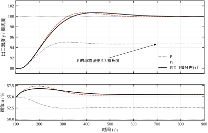
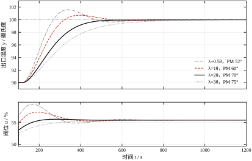
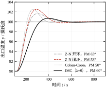
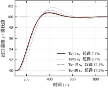
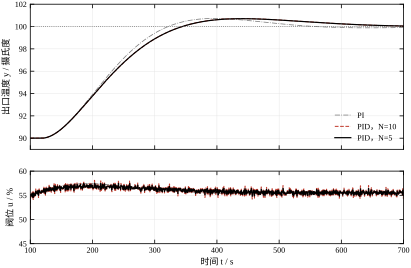
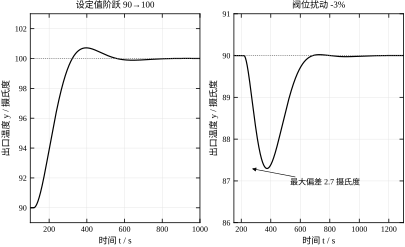
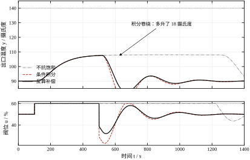
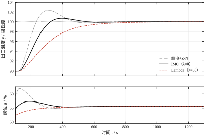
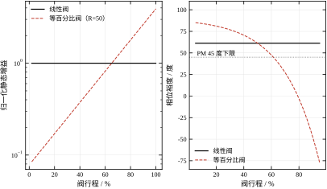

第 105 章收尾时，我们手里是一台换热器的一阶加纯滞后描述：增益 K=1.8 摄氏度每 % 阀位，时间常数 \tau=97.5 秒，纯滞后 \theta=55.5 秒。这三个数说清了“阀动一寸，温度何时动、动多少”。凡是准备给这台设备配一个反馈回路的人，下一步都会问同一个问题：控制器的 K_c、T_i、T_d 该填多少。
问题看上去只是查表。可表不止一张。拿同一组 K、\tau、\theta 去套五种最常见的整定规则，得到的答案相差到令人不安的地步，见表 106-1。
| 整定规则 | K_c（% 每摄氏度） | T_i（s） | T_d（s） |
|---|---|---|---|
| Z-N 开环（反应曲线） | 1.171 | 111.00 | 27.75 |
| Z-N 闭环（临界比例度） | 1.143 | 93.40 | 23.35 |
| Cohen-Coon | 1.468 | 113.78 | 18.53 |
| IMC（\lambda=\theta） | 0.488 | 97.50 | 0.00 |
| Lambda（\lambda=3\theta） | 0.244 | 97.50 | 0.00 |
最激进的 Cohen-Coon 给出 K_c=1.468，最保守的 Lambda 给出 K_c=0.244，两者相差 6.0 倍；Z-N 开环给出 T_d=27.75 秒的强微分，IMC 与 Lambda 干脆给出 T_d=0，连微分项都不要。也就是说，同一台设备，按不同的“权威表格”整定，一个会得到带微分的快控制器，另一个会得到几乎不动的慢控制器。两者都能在教科书里找到出处，都能说出自己的道理。
这不是哪张表算错了。这是整定问题本身的性质：对象只提供约束，不提供目标。K、\tau、\theta 决定了“哪些参数能让闭环稳定”，但没有决定“哪些参数算好”。好不好取决于你要什么——追设定值要快，还是抗负荷扰动要稳；允许 20% 超调，还是要求单调无超调；阀门还有多少余量，执行机构一年动多少次。目标一变，最佳参数就变。表 106-1 里那 6 倍的差距，本质上不是精度差异，而是目标差异。
因此本章不按“先给公式、再举例”的常规写法。先把“要什么”摊开，再让每条规则站到它自己的目标函数下面接受比较。读完这一章，你应该能在给定工况下判断该用哪条规则、改动某个参数会向哪个方向走、代价落在哪里，而不是背下五组系数。
PID 这个名字容易让人以为它是三个并列的旋钮，实际上三项各管一段时间，见图 106-1。

比例项看“现在”。误差是多少，阀位就挪多少，两者严格成比例。它的优点是不需要任何历史信息、响应即时；缺点是它必须留下一点误差才能维持阀位。稳态时阀位要停在某个开度上，而阀位只能由 K_c e 产生，所以 e 不可能为零。这一点用一行代数就能算出来。设设定值从 90 摄氏度升到 100 摄氏度，若只用比例控制、K_c=0.488，则稳态误差满足
e_{ss}=\frac{\Delta r}{1+K_c K}=\frac{10}{1+0.488\times1.8}=5.3\ \text{摄氏度} \tag{106-1}
图 106-1 中那条最先到达平台期的实线，就停在 94.7 摄氏度附近，离目标差 5.3 度。这不是调得不好，而是比例控制的固有属性：要它出力，就得给它误差。
积分项看“过去”。它把误差对时间累加，只要误差还存在，输出就继续往同一方向爬。累加的结果是稳态误差被彻底吃掉——式 (106-1) 的分母里那一项变成了无穷大。代价是相位：积分器在频域上贡献恒定的 -90 度相位，把闭环往振荡方向推。图 106-1 里 PI 那条虚线消除了稳态偏差，却在到达 100 摄氏度时冲过头约 7.3%，之后用四百多秒才慢慢压回来。
微分项看“将来”。它测的是误差变化率，误差刚开始变大它就提前动作，等于给回路加了一点“预判”。在设定值阶跃这种误差突变最剧烈的场合，微分项的效果最明显：图 106-1 里 PID 那条点划线的超调被压到接近零。但微分项测的是变化率，噪声也是变化率——这一点在图里看不出来，要等到 §106.5 用带噪声的数据才暴露。
用一个开车的比喻收束这三项：比例是看车此刻偏离车道多少，方向盘打多少；积分是发现车一直偏左、于是慢慢多打一点，直到回到中线；微分是看到车头正在快速往右甩，提前回一点，别等偏了再修。三者配合才稳，任何一项单独拉满都会出事。
图 106-1 值得再读一遍，它把本章后面十节要展开的矛盾都摆在了明面上。
第一件，稳态精度与响应速度不可兼得。纯比例那条线最快到达平台（因为它没有任何需要慢慢充放电的动态），但平台位置是错的。加上积分，平台对了，到达时间却从不到 100 秒拖到 410 秒。工程上所谓“调得好”，从来是在这条权衡曲线上挑一个点，而不是同时把两头都占满。
第二件，微分的收益和代价不对称。在图 106-1 这种干净信号下，微分把超调从 7.3% 压到 1% 以下，看起来是白捡的。但在同样的控制器参数下把测量噪声按 0.1 摄氏度加入，阀位行程会从 106.64 暴涨到 1074.77，涨了整整十倍。十倍行程意味着阀门填料、定位器、连杆每天多磨十倍的寿命。所以现场有一句经验话：“没有噪声问题的回路才配用微分。”这句话的定量版本在 §106.5 与 §106.9 给出。
第三件，参数之间会互相掩护。把 K_c 调大能让响应变快，同时把超调也调大；此时把 T_d 调大能把超调压回去，看起来“两个都改好了”，实际上回路对滞后的敏感度上升了。三个参数在二维的“快—稳”平面上互相抵消，单变量试凑很容易在原地绕圈。这正是需要整定规则的原因：规则的价值不在于它给出的数最优，而在于它给出的数落在合理区域，让现场微调只需在小范围内进行。
有人会问：既然最后都要现场微调，何必先算？直接在装置上试不就行了。原因有三条，一条比一条硬。
其一是时间成本。这台对象的动态时间尺度是 5\tau+\theta\approx 543 秒，约九分钟。一次阶跃试验要等将近十分钟才能看出结果，改三个参数至少各试两轮，一个下午就过去了。若对象的时间常数是小时级（大型储罐、长输管线），试凑法在工程上直接不可行。
其二是安全边界。试凑的典型手法是把 K_c 一路加大到回路开始等幅振荡，再退回来。这个“临界振荡”对很多工况是不允许的：换热器温度振荡会引起热应力，反应器温度振荡可能触发联锁。能在离线模型上算出来的东西，没必要在装置上冒险。§106.3 会给出用临界比例度法做试验时的振幅与次数限制，那已经是在“必须试”前提下的最小冒险方案。
其三是可复现性。手工试出来的参数没有记录依据，换了操作员、过了半年，没人说得清为什么是这组数。而用规则算出的初值带着对象模型、规则出处、名义裕度三项记录，审计和交接都站得住——这正是本书反复强调“数字要有出处”的实际意义。
所以正确的流程是“离线算初值、在线小修正”：规则负责把参数放进合理区域，现场只负责补偿模型没抓住的东西（阀门摩擦、测量滞后、工况漂移）。二者不是替代关系。
需要说明“离线算初值”能准到什么程度，免得读者期望过高。规则给出的初值通常与现场最优值差 20% 到 30%，误差来自三处，每一处都有明确的方向。第一处是降阶误差：本章名义模型是二阶对象按半规则降成一阶加纯滞后，降阶把分布滞后集中成纯滞后，会高估高频幅值，这在 §106.6 已经定量算过，1.75 dB 的幅值差对应穿越频率 1.24 倍的偏移。第二处是非线性误差：阀门的等百分比特性让回路增益随行程变化 22.9 倍，任何一组固定参数只在某个工作点附近是对的。第三处是时变误差：换热器结垢、催化剂老化、阀门磨损，都会让 K 与 \theta 随时间漂移，三个月后的对象已经不是整定时的对象。
三处误差的处置方式不同。降阶误差靠在真实模型上复核（§106.6.7）；非线性误差靠限制工作区间或增益调度（§106.9.4）；时变误差靠定期复核与自整定（§106.9.2）。三处都不会因为“初值算得准”而消失，所以现场微调这一步无法省略——但方向是对的：初值把参数放进合理区域，微调只在方圆 30% 内进行，而不是从零开始猜。
本章按“原理—步骤—情形—评价—落地”的顺序展开。
§106.2 先解决一个极易踩坑的形式问题：理想型、串联型、并行型三种 PID 写法的参数不能直接照抄，DCS 与 PLC 的习惯不同，换算公式必须记牢。§106.3 给出整定的标准步骤与试验规范。§106.4 在连续域推导五条规则，说明每条规则的系数是怎么来的、各自优化的是什么。§106.5 转到离散域，讨论位置式与增量式、采样周期与计算延迟。§106.6 是本章的重心：用同一组参数在名义模型与真实二阶对象上各算一遍裕度，会看到排序发生反转——名义上最稳的规则，落到真实对象上未必最稳。§106.7 逐项拆解 K_c、T_i、T_d、滤波系数 N、设定值权重 b 的物理作用。§106.8 汇总现场调参的手法与判断依据。§106.9 讨论三项改进：抗积分饱和、继电自整定、二自由度结构。§106.10 处理两个最容易被教科书忽略、却最影响实际效果的问题：阀门特性与手自动无扰切换。§106.11 划出 PID 的能力边界。§106.12 给出完整的仿真代码。
需要说明边界。PID 的基本概念在 §44 已经建立，本章不重复推导；模型预测控制见 §58 与 §80，本章只在对比时提及；Smith 预估器专门对付大滞后，见 §47 与 §107，本章的 IMC 规则与它同源但用途不同。本章只讨论单回路、单输入单输出、自衡对象这一最常见的情形。
同一个 PID，工业界至少有三种写法，参数互不通用。这是现场最容易踩的坑：从论文里抄一组理想型参数填进串联型的组态软件，回路会莫名其妙地慢一半或抖起来。
理想型（也称 ISA 型、非交互型）写作
C(s)=K_c\left[1+\frac{1}{T_i s}+T_d s\right] \tag{106-2}
三个参数各管一件事，物理意义最清晰：K_c 是比例增益，T_i 是积分时间（秒），T_d 是微分时间（秒）。现代 DCS 默认多用这一种。
串联型（也称交互型、级联型）写作
C(s)=K_c'\left(1+\frac{1}{T_i' s}\right)\left(1+T_d' s\right) \tag{106-3}
它把 PI 与 PD 两个环节串起来，是早期气动调节器的物理结构——一个反馈波纹管做 PI，一个微分针阀做 PD，串在一起就成了 PID。很多老装置、部分 PLC 指令库至今保留这种形式。
并行型写作
C(s)=K_p+\frac{K_i}{s}+K_d s \tag{106-4}
三项各自独立增益，量纲互不相同（K_p 无量纲放大倍数，K_i 每秒，K_d 秒）。它在数字实现里最方便——三项直接相加，不需要除法，但参数的含义最不直观，现场人员很难从 K_i=0.005 判断回路快慢。
串联型与理想型之间是两个方程对三个参数的关系，并不一一对应，换算需要附加条件。把式 (106-3) 展开：
C(s)=K_c'\left[\left(1+\frac{T_d'}{T_i'}\right)+\frac{1}{T_i' s}+T_d' s\right] \tag{106-5}
与式 (106-2) 逐项对齐，得
K_c=K_c'\left(1+\frac{T_d'}{T_i'}\right),\qquad T_i=T_i'\left(1+\frac{T_d'}{T_i'}\right),\qquad T_d=\frac{T_d'}{1+T_d'/T_i'} \tag{106-6}
由第二式看出 T_i=T_i'+T_d'，即理想型的积分时间等于串联型两个时间之和。代入第三式得 T_i'T_d'=T_iT_d，于是 T_i' 与 T_d' 是一元二次方程
z^2-T_i z+T_iT_d=0 \tag{106-7}
的两个根。判别式 T_i^2-4T_iT_d\ge 0 即 T_i\ge 4T_d，这就是串联型能够表示某个理想型参数的必要条件。取较大的根作为 T_i'（串联型要求积分时间大于微分时间），有
T_i'=\frac{T_i}{2}\left(1+\sqrt{1-\frac{4T_d}{T_i}}\right),\qquad T_d'=T_i-T_i',\qquad K_c'=K_c\frac{T_i'}{T_i} \tag{106-8}
这个判别式不是数学游戏，它解释了一个真实存在的现象：Ziegler-Nichols 的两条 PID 规则恰好落在判别式的边界上。开环法给 T_i=2\theta、T_d=0.5\theta，闭环法给 T_i=0.5T_u、T_d=0.125T_u，两者都满足 T_i=4T_d 严格成立，判别式为零。也就是说，这两组参数换算成串联型时两个根重合，T_i'=T_d'=T_i/2，串联型的两个时间常数完全相等。这不是巧合，是 Z-N 在设定系数时就有意让 PID 处于“积分作用与微分作用时间尺度相同”的状态。用 Cohen-Coon 的参数做一次换算，就能看到一般情形：T_i=113.78、T_d=18.53，判别式 113.78^2-4\times113.78\times18.53=4512.6，开方得 67.18，于是 T_i'=90.48 秒、T_d'=23.30 秒、K_c'=1.167。三个数都与理想型的 1.468、113.78、18.53 不同，直接照抄必然出错。
并行型与理想型的换算最简单，因为它只涉及乘法：
K_p=K_c,\qquad K_i=\frac{K_c}{T_i},\qquad K_d=K_cT_d \tag{106-9}
反向换算时要注意 K_i 与 K_d 单独存在时无法确定 K_c 与 T_i、T_d 的分配，必须先知道其中一个。这一点在多变量解耦或参数插值时会造成麻烦，因为 K_i 的线性插值不等价于 T_i 的线性插值。
把式 (106-2) 除以 K_c 并代入 s=j\omega，得到归一化频率特性
\frac{C(j\omega)}{K_c}=1+\frac{1}{j\omega T_i}+j\omega T_d \tag{106-10}
三项的相位贡献可以直接读出：比例项恒为 0 度；积分项为 -90 度，与频率无关；微分项为 +90 度，同样与频率无关。三者幅值随频率的变化则完全不同：比例项恒定，积分项按 1/\omega 衰减，微分项按 \omega 增长。
这个“相位恒定、幅值随频率变”的结构，决定了 PID 在不同频段的行为。低频段积分项幅值最大（1/\omega 趋于无穷），所以 PID 在低频是“积分主导”，负责消稳态误差；高频段微分项幅值最大，所以 PID 在高频是“微分主导”，负责加快响应——同时也把高频噪声放大。穿越频率 \omega_c 通常落在两者之间的比例主导区，此处的相位裕度主要由积分项和对象滞后共同决定。
理想微分在高频的增益无界，任何真实信号里的高频噪声都会被无限放大。因此工业 PID 的微分项一律带一阶滤波：
C(s)=K_c\left[1+\frac{1}{T_i s}+\frac{T_d s}{1+T_d s/N}\right] \tag{106-11}
N 称为微分增益限制（常见取值 8 到 20）。滤波把微分项的高频增益压到 K_cN，代价是相位超前不再能达到 90 度。单独看微分环节，它的相位为
\varphi_d(\omega)=90^\circ-\arctan\frac{\omega T_d}{N} \tag{106-12}
在 \omega=N/T_d 处相位降到 45 度，幅值达到 N/\sqrt{2}。若把微分写成串联形式 (1+T_d s)/(1+T_d s/N)，则其最大相位超前有闭式解
\varphi_{d,\max}=\arcsin\frac{N-1}{N+1},\qquad \omega_{\max}=\frac{\sqrt{N}}{T_d} \tag{106-13}
N=10 时 \varphi_{d,\max}=\arcsin(9/11)=54.9 度，出现在 \omega=3.16/T_d。这条式子说明：N 越小，滤波越强，能拿到的相位超前越少。N=2 时最大超前只有 \arcsin(1/3)=19.5 度，微分几乎白装。§106.9 会用实测数字说明这个取舍。
把式 (106-13) 在四个常用取值上算全，得到下面这组数（每行依次是最大超前、出现该超前的频率、微分环节的高频增益）：
这组数里有两条容易被忽略的规律。第一条是超前的边际递减：N 从 2 增到 10，最大超前涨了 35.4 度（19.47 到 54.90）；从 10 增到 20，只再涨 9.9 度（54.90 到 64.79）。也就是说，N 超过 10 以后，再放宽滤波能换回的超前已经很少，而高频增益却按 20\lg N 一直线性上涨，从 20.00 dB 涨到 26.02 dB，噪声放大了 6 dB。工地上的结论很朴素：N 取 8 到 12 就够，再大是拿噪声换几乎看不见的相位。
第二条是超前峰值出现的频率随 \sqrt{N} 上移：N=2 时峰值在 1.414/T_d，N=20 时移到 4.472/T_d，位置变了 3.16 倍。这提示一个更重要的判断：真正决定回路性能的不是峰值超前，而是穿越频率处的超前。本章 Z-N 闭环整定的参数是 T_d=27.75 秒、T_i=111 秒，穿越频率在 1.4 毫赫兹附近，此时 \omega T_d/N=0.052，\arctan(0.052)=3.0 度，微分环节在穿越频率处的相位是 90-3.0=87.0 度，几乎没有损失。换句话说，在 \omega_c\ll N/T_d 的常见情形下，滤波对相位的影响只在小数点后一位，N 的代价全部落在高频。
只有当 N 小到 N/T_d 逼近穿越频率时，这条结论才失效。仍以上面的参数为例，N=2 时 \omega T_d/N=0.261，\arctan(0.261)=14.6 度，穿越频率处的微分相位掉到 75.4 度，比理想微分少 14.6 度——这已经是一个可观的量，相当于把 T_d 白扔了三分之一。所以“N 太小”的真正危害不是峰值超前变小，而是相位损失从高频区蔓延到了穿越频率。
把两条规律合起来，就有了工程上选 N 的一条判据：先要求 N\ge10\,\omega_c T_d，保证穿越频率落在滤波拐点以下一个十倍频程，相位损失小于 6 度；再在这个下限之上，按测量噪声的大小往小取。温度这类慢回路信号干净，取 N=10 到 20；流量、压力这类信号本身带脉动，取 N=5 到 8；如果测量里明显有工频或阀门喘振的高频成分，宁可取更小的 N 甚至关掉微分。§106.5.4 会给出 N 与阀位行程的实测对照。
设对象传函为 P(s)，控制器为 C(s)，回路传函 L(s)=C(s)P(s)。负反馈闭环的互补灵敏度与灵敏度分别为
T(s)=\frac{L(s)}{1+L(s)},\qquad S(s)=\frac{1}{1+L(s)} \tag{106-14}
T 是设定值到输出的传函，S 是扰动到输出的传函（以对象输入端注入的负荷扰动计）。两者恒满足 S+T=1，这就是著名的“水床效应”的代数根源：在某个频段把 |S| 压下去，必然在另一频段把 |T| 抬起来，二者不可能同时处处很小。
工程上用最大灵敏度
M_s=\max_{\omega}|S(j\omega)| \tag{106-15}
作为鲁棒性的单一指标。M_s 的几何意义是奈奎斯特曲线到临界点 (-1,0) 的最短距离的倒数：M_s=1 表示曲线恰好穿过临界点（临界稳定），M_s=2 表示最短距离为 0.5。它与相位裕度有一个保守但好用的换算关系
PM\ge 2\arcsin\frac{1}{2M_s} \tag{106-16}
按此式，M_s=1.6 对应 PM\ge 36.4 度，M_s=1.3 对应 PM\ge 45.2 度。本章后续表格里同时给出 PM、GM、M_s 三个数，就是为了避免只看一个指标被误导：PM 大而 M_s 也大的回路是存在的，那种回路的裕度是“局部”的，一旦工况漂移就会失效。
标准 PID 只有一个输入——误差 e=r-y，设定值和测量值在进入控制器之前就被减掉了。这带来一个后果：设定值阶跃在控制器看来与测量值突变完全一样，于是微分项会对设定值阶跃产生一个冲激式的输出（“微分踢”），比例项也会全量响应，造成不必要的超调。
解决办法是给设定值单独一条通路，引入设定值权重：
u(t)=K_c\left[\left(b\,r-y\right)+\frac{1}{T_i}\int_0^t e(\tau)\,d\tau+T_d\frac{d\left(c\,r-y\right)}{dt}\right] \tag{106-17}
b 是比例权重，c 是微分权重。取 b=1、c=1 就是标准 PID；取 c=0 就是常说的“微分先行”（derivative on measurement），微分只作用于测量值，不对设定值阶跃起反应；取 b<1 则比例项对设定值“打折”，等效于在设定值通道上加了一阶滤波。
关键在于：b 与 c 只改变设定值跟踪特性，不改变扰动抑制特性。因为扰动进来时 r 不变，任何含 r 的项都为零，回路对扰动的传函与 b、c 无关。这给了整定一个极为实用的自由度：跟踪超调太大，不必动 K_c（那会牺牲扰动抑制），只调 b 即可。§106.9 会给出 b 从 1.0 降到 0.0 的实测代价——超调从 7.27% 降到 2.24%，但 IAE 从 1303 涨到 9981，天下没有免费的午餐。
执行机构有物理限幅，阀位只能在 [0,100] 之间（本机还多一道 60\% 的工艺上限）。控制器算出的 u_{raw} 若超出范围，实际执行的是
u_{sat}=\mathrm{sat}\left(u_{raw},u_{\min},u_{\max}\right) \tag{106-18}
问题出在积分器：它并不知道自己被限幅了，仍然按 e 继续累加。设定值大幅上调、阀已经全开、温度还在下面爬，误差始终为正，积分器就一直涨，涨到远超实际需要的程度——这叫积分卷绕（windup）。等温度终于上来、误差变号，积分器要先“退烧”很久才能把阀关小，于是产生巨大的超调。§106.9 的实测是：不处理卷绕，峰值冲到 108 摄氏度（比目标高 18 度），恢复要 900 秒。
两种标准对策。条件积分在饱和且误差方向会加剧饱和时停止积分：
\dot{I}=\begin{cases}e,&u_{raw}\in[u_{\min},u_{\max}]\ \text{或}\ e\cdot(u_{sat}-u_{raw})<0\\ 0,&\text{otherwise}\end{cases} \tag{106-19}
反算补偿（back-calculation）则让积分器持续工作，但额外注入一个与饱和深度成正比的修正项：
\dot{I}=e+\frac{1}{T_t}\left(u_{sat}-u_{raw}\right) \tag{106-20}
T_t 是跟踪时间常数，通常取 T_t=\sqrt{T_iT_d} 或 T_t=T_i。饱和越深，修正越强，积分器被“拉回”到刚好让输出等于限幅值的位置；一旦退出饱和，u_{sat}=u_{raw}，修正项自动消失，控制器无缝接回。两种方法的实测对比、以及为什么反算通常更快，留到 §106.9。
整定不是“套公式”，而是一条有先后次序的流水线。顺序错了，后面每一步都在补救前面的错。本章采用的流程如下。
第一步，写下目标。 这一条最容易被跳过，却决定了后面所有选择。要问四个问题：这个回路主要任务是跟踪设定值变化，还是抑制负荷扰动？允许多大超调（温度回路通常 5% 到 10%，液位回路可以到 20%）？要求的调节时间是多少？阀门一年允许多少次全行程动作？四个答案写下来，才谈得上“调好了”。
第二步，拿对象模型。 第 105 章给出了三条路：阶跃试验加两点法或面积法、继电反馈试验、历史数据拟合。三条路的共同要求是数据必须覆盖工作点附近，且信噪比不低于 100:1。模型形式优先选 FOPDT——三个参数，够用，且所有经典规则都是按它推的。
第三步，选控制器结构。 先用 P、PI 还是 PID，不由习惯决定，由滞后比 \theta/\tau 和噪声水平决定，判据见 §106.3.3。
第四步，用规则算初值。 五条规则在 §106.4 展开。选择依据不是“哪条更先进”，而是“哪条的目标与第一步写下的目标一致”。
第五步，算名义裕度。 把 K_c、T_i、T_d 和名义模型代进去，算穿越频率、相位裕度、增益裕度、最大灵敏度。验收门槛：PM 在 45 到 60 度之间，GM 大于 6 dB，M_s 小于 1.8。低于下限说明太激进，高于上限说明太保守、可以再快一点。
第六步，回到真实对象上复核。 这是本章反复强调、而多数手册省略的一步。规则是在名义模型上推的，若真实对象是二阶或更高阶，名义裕度会系统性偏乐观。§106.6 会给出实测：同一组参数，名义 PM 与真实 PM 相差可以到 13 度，且不同规则的偏差方向不一致，足以改变规则之间的排序。
第七步，上线投自动并记录。 投自动前必须做无扰切换（§106.10），投自动后先做一次小幅设定值阶跃（2 到 3 摄氏度），确认实际响应与仿真趋势一致，再逐步放开。最终参数、试验曲线、计算依据一并归档。
第五步之前的所有计算都依赖第二步的数据，而阶跃试验做得不规范，后面全盘皆错。规范有五条。
幅度取 2% 到 5% 阀位。太小则信噪比不够，噪声会把拐点淹没；太大则进入非线性区，尤其等百分比阀在大开度处增益变化剧烈（§106.10），大步阶测出的增益不能代表工作点附近的增益。
起点选在正常工作点。不要在阀位接近 0 或 100 的地方做试验——那里已经进入限幅区，测出的“增益变小”是饱和造成的假象，不是对象特性。
持续时间不少于 5\tau+\theta。按本章对象算，5\times97.5+55.5=543 秒。少于这个时间，响应还没到 95%，面积法算出的时间常数会偏小。保守做法是录到曲线完全走平后再多录两个时间常数。
采样周期不大于 \tau/10，即 10 秒以内。本章仿真取 0.1 秒，实际装置取 1 秒足够；但若要用面积法算二阶参数，采样还要更密，因为拐点附近的斜率对结果影响很大。
试验前后各留一段稳态。前段用于确定初值，后段用于核对稳态增益。两段的均值之差除以阀位变化量，就是 K；这个值与用斜率算出的 K 应当一致，不一致说明试验期间有未记录的负荷变化。
安全上还有三条硬要求：试验必须在手动状态下进行，且操作员明确知道何时结束；联锁与报警不得旁路；若对象是放热反应等自衡性差的过程，阶跃幅度还要再减半，并准备手动回退方案。
上面五条规范里，幅度与时间两条可以算得更具体，因为它们是现场最常被打折的两条。幅度 2% 阀位在本章对象上对应 2\times1.8=3.6 摄氏度的稳态变化，而温度变送器的噪声标准差约 0.05 摄氏度，信噪比 72 比 1，拐点位置一眼可辨。若把幅度压到 0.5% 阀位，稳态变化只有 0.9 摄氏度，信噪比掉到 18 比 1，用两点法取 63.2% 点时，读数的±1 个采样点误差就能让 \tau 偏 10% 以上。反过来，幅度放大到 10% 阀位（18 摄氏度），等百分比阀在大开度处的增益比工作点高出一倍多，测出的 K 偏大，整定出来的 K_c 就偏小，回路会显得“怎么调都偏慢”。幅度选择的实质是找一个信噪比足够、又没跨出线性区的窗口，2% 到 5% 正是这个窗口的经验宽度。
持续时间 543 秒这条容易被误读成“录 543 秒就够”。它说的是从阶跃开始到曲线走平的时间，而“走平”需要一个判据：连续 3 个 \tau 内测量值的变化小于总变化量的 0.5%，等价于斜率小于总变化量的 1/(600\tau)。按本章对象，这个斜率阈值是 3.6/58500=6\times10^{-5} 摄氏度每秒，也就是每分钟 0.004 摄氏度。现场用趋势画面的量程格判断时，这个量级已经看不见了，所以更实用的做法是录到曲线在画面上连续十分钟不动，再多录两倍时间。
试验期间还有一条常被漏掉的前提：负荷必须稳定。若试验进行中蒸汽总管压力在缓慢下降，测到的曲线是“阶跃响应叠加一条缓慢下降的基线”，用面积法算出的 \tau 偏大、K 偏小，而且偏得没有规律。判断办法是看试验前后的稳态段：两段均值之差除以阀位变化量得到的 K，与用曲线斜率算出的 K 应当一致；两者差 10% 以上，这次试验就该作废重做，而不是“取平均凑合用”。
若工艺不允许做阶跃（比如产品不能中断、或者阶跃会让下游装置波动），可以退一步用脉冲试验，或者用 §106.9.2 的继电试验直接读 K_u 与 T_u。这两条路的辨识算法与阶跃不同，不能把脉冲的峰值当成阶跃的稳态值来套 Z-N 公式——这是初学者常犯的错。
最后是记录清单。一次合格的试验至少留下五列数据：时间戳、阀位指令、实际阀位、测量值、以及当时的主要负荷变量（蒸汽压力、进料流量之类）。前四列用于辨识，第五列用于事后判断这次试验是否可信。只留前四列的记录，出了问题无法复盘。
控制器结构的选择有明确的量化依据，核心是滞后比 \theta/\tau 与噪声水平。
\theta/\tau<0.1 时，纯比例控制往往就够。滞后小意味着误差一出现、执行机构立刻见效，积分器能带来的一点点稳态精度提升不值得它引入的 -90 度相位。流量回路是典型例子，很多流量回路常年只投 P。
0.1\le\theta/\tau\le1 时，PI 是标准配置。本章对象的 \theta/\tau=55.5/97.5=0.569，正落在这个区间的中部。是否加微分，要看噪声：测量噪声峰峰值超过量程的 1%，就不建议加。
\theta/\tau>1 时，PID 的边际收益迅速下降。纯滞后不提供任何相位信息，任何基于当前误差的反馈都无法“提前”知道扰动已经发生。此时正确的方向不是加大 K_c，而是换结构：Smith 预估器（§107）或模型预测控制（§80）。本章不展开。
还有一条常被忽略的判据：是否存在积分对象。液位、储罐这类对象本身就在积分，若再加积分作用，回路会变成双积分，极易振荡。这类回路通常只用 P，靠“有差调节”维持物料平衡。反过来，若工艺要求零稳态误差（如配比、pH），积分项不可省。
把第五、六步的检查项固定成一张表，每次整定都过一遍，可以避免“调完看着不错、过两周开始周期性振荡”这类事故。表 106-2 是本章采用的清单。
| 检查项 | 判据 | 不满足时的处置 |
|---|---|---|
| 相位裕度 PM | 45 到 60 度 | 低于 45 减 K_c；高于 60 可加 K_c |
| 增益裕度 GM | 大于 6 dB | 不足则减 K_c 或加 T_i |
| 最大灵敏度 M_s | 小于 1.8 | 超过则减 K_c |
| 设定值超调 | 不超过工艺允许值 | 调 b 或加大 T_i |
| 调节时间 | 不超过工艺允许值 | 加 K_c 或减 T_i |
| 负荷扰动最大偏差 | 不超过工艺允许值 | 加 K_c（注意与超调冲突） |
| 阀位行程 | 在年动作次数预算内 | 加大 T_d 滤波或去掉微分 |
| 测量通道滤波 | 滤波时间常数已显式计入 \theta | 未计入则重算裕度，或减小滤波 |
| 抗饱和 | 大幅设定值阶跃后无长时间反向停留 | 加条件积分或反算 |
清单里有一处内在冲突值得点明：负荷扰动最大偏差与设定值超调是一对矛盾。前者要求 K_c 大，后者要求 K_c 小。若两者不能同时满足，正确的做法不是折中，而是用 §106.2.5 的二自由度结构把两件事拆开——K_c 按扰动要求定，b 按超调要求定。
用本章的对象把七步走完，可以看清每一步的产出。
目标：出口温度跟踪设定值，超调不超过 10%，调节时间不超过 600 秒，负荷扰动（蒸汽压力波动折合 -3% 阀位）最大偏差不超过 3 摄氏度，阀门年动作次数不设硬约束。
模型：K=1.8、\tau=97.5 秒、\theta=55.5 秒，\theta/\tau=0.569，由第 105 章半规则降阶得到。
结构：落在 0.1 到 1 区间，选 PI。测量噪声若小于量程 1%，可以试 PID。
初值：先用 IMC，取 \lambda=\theta，得 K_c=0.488、T_i=97.5 秒、T_d=0。
名义裕度：PM=61.35 度、GM=9.94 dB、M_s=1.590。三项都在门槛内，PM 略高于 60 度，说明还有加快的余地。
真实对象复核：PM=60.42 度、GM=15.55 dB、M_s=1.475。名义与真实的差距只有 0.9 度，是五条规则里差距最小的一条。
时域：超调 7.16%、上升时间 135.7 秒、调节时间 410.0 秒、IAE 1304.8，全部满足目标。
到这里看起来可以收工。但清单里还有一行没查：负荷扰动最大偏差。实测 -3% 阀位扰动下，最大偏差 2.70 摄氏度，勉强在 3 度以内，恢复时间 415.7 秒。对照同表其他规则，Z-N 开环的最大偏差只有 1.62 摄氏度，恢复 323.5 秒——扰动抑制比 IMC 好 40%。原因很直接：IMC 取 \lambda=\theta 时 K_c 只有 0.488，而 Z-N 开环给了 1.171。K_c 小，扰动来了阀动得少，偏差自然大。
这就是 §106.1 所说“目标决定参数”的具体形态。若这个回路的主要任务是抗蒸汽压力波动，而不是跟设定值，那么正确的选择是 Z-N 开环或 Cohen-Coon，而不是看起来最“现代”的 IMC。整定规则没有优劣，只有匹配。
把整定写成优化问题，才能看清各条规则的差别到底在哪。设对象 P(s)，控制器 C(s;\theta_c)，\theta_c=(K_c,T_i,T_d) 是待定参数。整定就是解
\min_{\theta_c}\ J\left(\theta_c\right)\quad \text{subject to}\quad M_s\left(\theta_c\right)\le M_s^{\max} \tag{106-21}
目标函数 J 可以是设定值跟踪的 IAE、负荷扰动的 IAE、调节时间、超调量，或它们的加权组合。约束通常是 M_s\le 1.8，等价于要求一定 robustness。
不同的规则，本质上是给式 (106-21) 选了不同的 J 和不同的求解方式。Ziegler-Nichols 的两条规则来自“四分之一衰减比”这一经验判据，Cohen-Coon 把衰减比的要求推广到更大的 \theta/\tau，IMC 与 Lambda 则直接指定闭环响应的形状。它们不是同一个优化问题的不同算法，而是五个不同的优化问题。这就是为什么表 106-1 里会有 6 倍的差距。
1942 年 Ziegler 与 Nichols 提出的第一条规则，用的是一阶加纯滞后的阶跃响应。在响应曲线的拐点处作切线，切线的斜率为 R=K/\tau，与时间轴的交点给出 L=\theta。他们的 PID 配方是
K_c=\frac{1.2}{RL}=\frac{1.2\tau}{K\theta},\qquad T_i=2\theta,\qquad T_d=0.5\theta \tag{106-22}
代入本章对象：K_c=1.2\times97.5/(1.8\times55.5)=1.171，T_i=111.00 秒，T_d=27.75 秒，即表 106-1 第一行。
这组系数的来源是“四分之一衰减比”——让闭环在扰动后相邻两个同号峰值的幅度之比为 4:1。对纯二阶系统，衰减比 0.25 对应阻尼比 0.216，对应的超调是 50%。听起来很激进，但要注意“衰减比”描述的是扰动响应中相邻峰值的比例，不是设定值阶跃的第一峰超调。本章对象实测设定值阶跃超调 16.60%，比 50% 小得多，因为 FOPDT 的额外滞后把第一个峰削平了。
式 (106-22) 有一个容易被忽略的特点：三个参数都只与 \theta 有关，T_i 与 T_d 完全不看 \tau。这意味着对象时间常数从 60 秒变到 600 秒，Z-N 开环给出的积分与微分时间一模一样。这在 \theta/\tau 接近 1 时还能用，在 \theta/\tau 很小时会给出积分过强、微分过弱的组合。也正因如此，Z-N 开环对模型误差比较敏感，实测中超调 16.60%、调节 381.5 秒，是五条规则里第二激进的。
Z-N 的原表其实有三组系数，对应 P、PI、PID 三种结构。P 组是 K_c=1/(RL)；PI 组是 K_c=0.9/(RL)、T_i=3.3\theta；PID 组才是式 (106-22)。三组并列放在一起，能看出一个有意思的地方：K_c^{\rm P}=0.976、K_c^{\rm PI}=0.878、K_c^{\rm PID}=1.171。
PI 的增益比纯 P 低 10%（因为多了 -90 度的积分相位），这符合直觉。但 PID 的增益反而比 PI 高 33%，这就不那么直观了——多加了一个积分环节，凭什么还能把增益加大？
答案在微分项。PID 组同时把积分时间从 PI 组的 3.3\theta=183.15 秒缩短到 2\theta=111.00 秒，又加了 T_d=0.5\theta=27.75 秒的微分。在 0.02 弧度每秒处逐项算一遍：PI 组的归一化频率特性是 1-j0.273，相位 -15.3 度；PID 组是 1-j0.451+0.031+j0.552=1.031+j0.101，相位 +5.6 度。两者相差 20.9 度，其中微分贡献约 +29.9 度，积分时间缩短贡献约 -9 度。也就是说，微分不只是补上了积分缩短的损失，还多出 20 度的净余量，这才是 PID 组敢把增益提到 1.171 的原因。
这条事实有一个实用推论：P、PI、PID 三组系数绝对不能混用。现场常见“原来用 PI，现在加个微分，把 Z-N 表里的 T_d 填进去”的做法，结果是 K_c 还停在 PI 的 0.878、T_i 还是 183.15，只加了一个 T_d。这样得到的回路既没有 PID 组的增益，又背上了微分的噪声代价，性能反而不如原来的 PI。
第二条规则不需要阶跃响应，只需要把回路置于纯比例、逐步加大 K_c 直到等幅振荡。此时的增益叫临界增益 K_u，振荡周期叫临界周期 T_u。PID 配方为
K_c=0.6K_u,\qquad T_i=0.5T_u,\qquad T_d=0.125T_u \tag{106-23}
本章对象的临界点可以解析求出。纯比例下回路传函为 K_cKe^{-j\omega\theta}/(1+j\omega\tau)，令其相位等于 -180 度：
-\arctan\left(\omega_u\tau\right)-\omega_u\theta=-\pi \tag{106-24}
数值解为 \omega_u=0.03364 弧度每秒，即 f_u=5.353 毫赫兹，T_u=2\pi/\omega_u=186.8 秒。代回幅值条件 K_u=\sqrt{1+(\omega_u\tau)^2}/K，得 K_u=1.905。于是 K_c=1.143、T_i=93.40 秒、T_d=23.35 秒。
这里有一个结构性的事实值得指出：FOPDT 的相位只有在 \omega\to\infty 时才趋于 -90 度，是纯滞后把它推到 -180 度的。若对象没有滞后，任何 K_c 都不会振荡，临界比例度法根本无从做起。所以这条规则对滞后特别敏感：\theta 估计偏小 20%，T_u 会显著偏大，K_c 随之偏大，回路就比设计值激进。
闭环法的优点是试验时间短（只需找到振荡点），缺点是需要把回路推到稳定边界，很多工艺不允许。§106.9 的继电反馈法就是为了在不越过稳定边界的前提下拿到 K_u 与 T_u。
1953 年 Cohen 与 Coon 在 Z-N 的基础上加入了 \theta/\tau 的修正。令 r=\theta/\tau，PID 配方为
K_c=\frac{\tau}{K\theta}\left(1.35+0.27r\right),\qquad T_i=\theta\frac{2.5+0.46r}{1+0.61r},\qquad T_d=\theta\frac{0.37}{1+0.19r} \tag{106-25}
本章对象 r=0.569，代入得 K_c=1.468、T_i=113.78 秒、T_d=18.53 秒。这是五条规则里 K_c 最大的一组，也是名义相位裕度最小的一组——只有 36.67 度。
式 (106-25) 的设计区间是 0.1<r<1。区间内它比 Z-N 更贴合“四分之一衰减”的目标，因为它承认了这样一个事实：\theta/\tau 越大，对象越难控，控制器必须相应地减小增益、加长积分时间。看两个端点：r\to0 时 K_c\to1.35\tau/(K\theta)，接近 Z-N 的 1.2；r=1 时 K_c\to1.62\tau/(K\theta)，比 Z-N 高 35%。注意这里的方向：r 增大时，K_c 的系数反而增大。这看起来违反直觉——对象更难控，增益怎么还更大？原因是分母里已经有 \theta，\theta 增大使 K_c 整体下降，分子上的 1.35+0.27r 只是补偿 \theta 增大的过头部分。
Cohen-Coon 的实测超调 25.16%、上升 59.6 秒、调节 270.8 秒，是最快的一条。但代价也最明显：阀位行程 32.85，是 IMC 的 3.4 倍；名义 PM 只有 36.67 度，已经跌破 45 度的验收下限。它在“响应速度”这个目标上最优，在“鲁棒性”这个约束上最差。
内模控制（IMC）走的是另一条路：先指定闭环响应长什么样，再反解控制器。设对象 P(s)=Ke^{-\theta s}/(\tau s+1)，指定闭环为 \lambda 时间常数的一阶惯性，IMC 控制器为
C(s)=\frac{\tau s+1}{K\left(\lambda s+1-e^{-\theta s}\right)} \tag{106-26}
对分母作一阶展开 e^{-\theta s}\approx1-\theta s，得
C(s)\approx\frac{\tau s+1}{K\left(\lambda+\theta\right)s}=\frac{\tau}{K\left(\lambda+\theta\right)}\left(1+\frac{1}{\tau s}\right) \tag{106-27}
这正是 PI 控制器，于是
K_c=\frac{\tau}{K\left(\lambda+\theta\right)},\qquad T_i=\tau,\qquad T_d=0 \tag{106-28}
取 \lambda=\theta，得 K_c=0.488、T_i=97.5 秒、T_d=0。T_d=0 不是省略，而是一阶对象没有第二个极点需要补偿——加微分只会放大噪声，不带来相位收益。
式 (106-28) 有一个漂亮的推论。把 T_i=\tau 代回回路传函，控制器的零点 \tau s+1 恰好抵消对象的极点：
L(s)=C(s)P(s)=\frac{\tau}{K(\lambda+\theta)}\cdot\frac{\tau s+1}{\tau s}\cdot\frac{Ke^{-\theta s}}{\tau s+1}=\frac{e^{-\theta s}}{(\lambda+\theta)s} \tag{106-29}
回路化成了一个纯积分加纯滞后。它的频率特性完全可解析：幅值为 1/((\lambda+\theta)\omega)，相位为 -90 度再减去 \omega\theta。穿越频率由幅值等于 1 给出，\omega_c=1/(\lambda+\theta)，于是
PM=90^\circ-\frac{180^\circ}{\pi}\cdot\frac{\theta}{\lambda+\theta},\qquad GM=20\lg\frac{\pi(\lambda+\theta)}{2\theta} \tag{106-30}
取 \lambda=\theta：PM=90-57.296\times0.5=61.35 度，GM=20\lg\pi=9.94 dB。取 \lambda=3\theta：PM=75.68 度，GM=15.96 dB。
式 (106-30) 是本章最重要的一条式子，理由有两条。第一，它说明 IMC 的相位裕度只取决于 \lambda/\theta 这个比值，与 K、\tau 完全无关。对象增益翻倍、时间常数减半，只要 \lambda/\theta 不变，名义相位裕度就是 61.35 度。第二，它揭示了名义裕度的欺骗性：式 (106-30) 是在“极点被零点完全抵消”的前提下推出来的，而真实对象若还有第二个极点，这个抵消就不完全，实际裕度必然低于名义值。§106.6 会量出这个差额。
SIMC（Skogestad IMC）是同一族方法的一个变体，把积分时间改为 T_i=\min(\tau,4(\lambda+\theta))，并对二阶对象给出 T_d=\tau_2。本章对象为 FOPDT，两个版本给出相同结果。
Lambda 整定与 IMC 用的是同一个式 (106-28)，区别只在 \lambda 怎么选。IMC 把 \lambda 当作“期望闭环时间常数”，常取 \lambda=\theta 求平衡；Lambda 整定则从“设定值响应不超调”出发，要求 \lambda\ge3\theta，工程上常直接取 \lambda=3\theta。
取 \lambda=3\theta，得 K_c=97.5/(1.8\times222)=0.244、T_i=97.5 秒。式 (106-30) 给出 PM=75.68 度、GM=15.96 dB，是全表最稳的一组。实测也印证了这一点：设定值阶跃超调 -0.03\%（完全无超调），上升 342.8 秒，调节 670.9 秒。用六倍的响应时间换一个“绝对不超调”，这就是 Lambda 的定价。
Lambda 整定在工程上受欢迎，原因很实际：它给出的闭环响应接近一阶惯性，操作员看到的是“慢慢爬上去、不冲过头”，心理上最放心；而且它对模型误差的容忍度高，K 偏 30% 时回路仍然稳定。代价是它抑制负荷扰动的能力最差——实测 -3% 阀位扰动下最大偏差 3.32 摄氏度、恢复 765.4 秒，都是五条规则里最差的。原因还是那个：K_c 只有 0.244，扰动来了阀几乎不动。
\lambda 是本章唯一一个可以连续调节的旋钮，扫描它能看清“快—稳”权衡的全貌。取 0.5\theta 到 4\theta 五档，实测结果如下。
\lambda=0.5\theta：K_c=0.651，PM=51.74 度，超调 15.96%，调节 521.6 秒，IAE 1239.5。这是最激进的一档，超调明显，但 IAE 最小——因为上升最快。
\lambda=\theta：K_c=0.488，PM=60.42 度，超调 7.16%，调节 410.0 秒，IAE 1304.8。平衡点，也是本章的基准。
\lambda=2\theta：K_c=0.325，PM=70.21 度，超调 0，调节 385.9 秒，IAE 1661.5。注意调节时间反而最短——没有超调，曲线一次进带，不需要等振荡衰减。
\lambda=3\theta：K_c=0.244，PM=75.29 度，超调 0，调节 670.9 秒，IAE 2216.4。即 Lambda 整定的推荐值。
\lambda=4\theta：K_c=0.195，PM=78.32 度，超调 0，调节 902.2 秒，IAE 2770.3。已经过慢，调节时间是 \lambda=2\theta 的 2.3 倍。
这组数据有三处反直觉。
其一，IAE 随 \lambda 单调增（1239.5、1304.8、1661.5、2216.4、2770.3），从 0.5\theta 到 4\theta 涨了 2.2 倍。这符合“越慢越差”的直觉。
其二，调节时间不单调，在 2\theta 处取最小值 385.9 秒。原因是调节时间的定义是“进入并保持在 2% 带内”，有超调时曲线要来回穿带，反而更晚稳定。所以在 \lambda=\theta 附近，超调 7.16% 让调节时间变成 410.0 秒，比无超调的 2\theta 还长。
其三，PM 从 51.74 单调升到 78.32，与 IAE 的变化方向完全相反。这再次印证 §106.6.5 的结论：频域裕度与时域性能不是一回事，用 PM 单选参数会把回路调到过慢的一侧。

图 106-3 把这五档画在一起。可以看到 \lambda=0.5\theta 与 \theta 两条线的差别主要在第一个峰，\lambda=2\theta 之后各条线形状相似、只是整体右移。这说明 \lambda 超过 2\theta 之后，继续加大只是线性地拉长时间，不再改变响应形状——此时回路的“性格”已经定型，剩下的只是快慢。
工程上选 \lambda 的判据可以归纳成三条。若主要指标是 IAE 或扰动抑制，取 \lambda 在 0.5\theta 到 \theta 之间，并用 PM 不低于 45 度把关。若工艺不允许超调（如某些结晶、聚合反应），取 \lambda\ge2\theta。若对象模型不可靠、或工况漂移大，取 \lambda\ge3\theta，用响应速度换鲁棒性。
把五条规则放在同一张坐标系里，它们其实是“激进程度”这一个维度上的五个刻度。表 106-3 汇总了各自的设计依据与适用条件。
| 规则 | 设计依据 | 适用 \theta/\tau | 名义 PM（度） | 名义 GM（dB） | 典型用途 |
|---|---|---|---|---|---|
| Z-N 开环 | 四分之一衰减 | 0.1 到 1 | 59.43 | 2.82 | 扰动为主、允许超调 |
| Z-N 闭环 | 四分之一衰减 | 0.1 到 1 | 51.08 | 3.98 | 有振荡试验条件时 |
| Cohen-Coon | 衰减比加 \theta/\tau 修正 | 0.1 到 1 | 36.67 | 2.40 | 追求最快响应 |
| IMC（\lambda=\theta） | 指定闭环时间常数 | 0.1 到 2 | 61.35 | 9.94 | 通用起点 |
| Lambda（\lambda=3\theta） | 设定值无超调 | 0.1 到 2 | 75.68 | 15.96 | 串级副回路、易振荡对象 |
表 106-3 里 Z-N 两条规则的增益裕度只有 2.82 与 3.98 dB，远低于 6 dB 的验收门槛，这不是算错，而是四分之一衰减判据本身就允许回路工作在离稳定边界不远的地方。这也解释了为什么现场用 Z-N 整完的回路常常“看着很好、一有扰动就振荡”——它的裕度在名义模型上就已经不够。

图 106-2 把四条规则的响应画在一起。可以看出三件事。第一，响应速度的排序与 K_c 的排序一致：Cohen-Coon 最快，Lambda 最慢。第二，超调的排序并不与 K_c 严格对应：Z-N 闭环的超调 25.32% 高于 Z-N 开环的 16.60%，尽管两者 K_c 只差 2.4%，差别来自 T_i 更短（93.40 对 111.00）。第三，Lambda 那条线在图上几乎是单调爬升，没有任何过冲，但要 671 秒才进入 2% 带。
这张图有一个陷阱，也是下一节要处理的问题：图例里标的是名义相位裕度，而曲线是画在真实二阶对象上的。若拿图例的数字判断哪条曲线更稳，会得出 IMC 最稳、Cohen-Coon 最激进的结论。这个结论在真实对象上恰好不成立——§106.6 会给出证据。
PM=180^\circ+\angle L(j\omega_c)，而 \angle L 是四项之和：对象极点 -\arctan(\omega_c\tau)、纯滞后 -\omega_c\theta、积分 \angle(1-1/(j\omega_cT_i))（负）、微分 \angle[1+j\omega_cT_d/(1+j\omega_cT_d/N)]（正）。把这四项在各自的穿越频率上算出来，相位裕度就不再是一个“结果”，而是一份可以逐条核对的账。用 ch106_sim.py 的 pid_freq 与 loop_margins 对 Z-N 三组系数做分解（N=10），结果如下。
第一读：纯滞后与对象极点各占一半，合力已经越过 -90^\circ。 PID 组在 3.165 毫赫兹上两项合计 -125.94^\circ，控制器必须拿出 +28.10^\circ 才能把总和拉回 -122.22^\circ。这也给出了 \theta 误差的直接后果：参数不动、只把 \theta 从 55.5 秒改成 44.4 秒（估小 20%），滞后项就从 -63.23^\circ 变成 -50.58^\circ，同一频率上的 PM 虚增 12.7 度。§106.4.3 说“\theta 估计偏小 20% 会让回路比设计值激进”，这里给出了它的度数。
第二读：积分与微分在穿越点几乎抵消，换到的是带宽。 从 PI 到 PID，积分项多吃了 3.13 度（T_i 由 183.15 缩到 111.00），微分补回 28.10 度，控制器净赚 24.97 度；但穿越频率同时从 2.235 升到 3.165 毫赫兹，极点多吃 8.85 度、滞后多吃 18.57 度，又还回去 27.42 度。一进一出，PM 从 60.23 微降到 59.44，几乎不变，而带宽涨了 41.6%（3.165/2.235）。所以 PID 相对 PI 的收益不是“更稳”，而是“同样稳但快四成”——这句话比“加微分改善动态性能”精确得多。
第三读：PM 最高的一组，鲁棒性并不是最好。 P 组 PM=77.59^\circ，比 PID 高 18 度，但 GM 只有 5.81 dB，M_s=2.15。原因是没有积分，低频增益有限，相位到 -180^\circ 时幅值仍有 10^{-5.81/20}=0.512，灵敏度在那附近鼓到 1/(1-0.512)=2.05，与实测 2.15 只差一点。PID 组同理：GM=2.82 dB 对应 |L|=0.722，1/(1-0.722)=3.60，实测 3.61。于是得到一条在纯滞后对象上很好用的换算：
M_s\approx\frac{1}{1-10^{-GM/20}}
它说明在同一对象上，M_s 与 GM 几乎是同一个数的两种写法，取哪个都行；但也正因如此，两者一起报并不增加信息量。真正互补的是 PM 与 GM：P 组 PM 高而 GM 低，PID 组两者都低，这才是“相位在穿越点之后还继续下降”留下的指纹。
最后要提醒一句：P 组的 PM 最漂亮，却带着图 106-1 里 5.3 摄氏度的稳态误差。三组之间怎么选，先看工艺允不允许稳态误差，再看裕度——顺序反了，就会选出一个“很稳但永远差 5 度”的回路。
连续域的式 (106-2) 落到 PLC 或 DCS 里，必须先离散。最直接的做法是把积分换成累加、微分换成一阶差分，得到位置式算法：
u[k]=K_c\left[e[k]+\frac{T_s}{T_i}\sum_{j=0}^{k}e[j]+\frac{T_d}{T_s}\left(e[k]-e[k-1]\right)\right] \tag{106-31}
它的输出是阀位的绝对值，每一项都直接对应连续域的物理量。缺点是积分项 \sum e[j] 必须一直累加，一旦执行机构饱和，这个和会无限增长，正是 §106.2.6 所说的积分卷绕。另外，位置式在切换手动、自动时必须预置积分器初值，否则输出会跳变。
把相邻两拍相减，得到增量式算法：
\Delta u[k]=K_c\left[\left(e[k]-e[k-1]\right)+\frac{T_s}{T_i}e[k]+\frac{T_d}{T_s}\left(e[k]-2e[k-1]+e[k-2]\right)\right] \tag{106-32}
它的输出是阀位的变化量，执行时累加：u[k]=u[k-1]+\Delta u[k]。三个好处很实用。第一，不需要单独维护积分器——积分作用隐含在 e[k] 那一项里，只需保存最近两拍误差。第二，手动切自动天然无扰：切换瞬间令 e[k]=e[k-1]=e[k-2]，三个差分项全为零，\Delta u=0，阀位不动。第三，若执行机构是步进电机或增量式阀门，增量式输出可以直接对接。
但增量式不是没有代价。它丢掉了阀位的绝对参考，u[k] 必须由程序自己累加并限幅；而且限幅之后若不把累加值拉回，卷绕依旧存在，只是从“积分项卷绕”变成了“输出累加值卷绕”。实际工程中两者都要做抗饱和，做法见 §106.9。
还有一处容易错的地方：增量式里积分项的系数是 T_s/T_i 乘以当前误差 e[k]，不是误差的差分。写成 \Delta e 就变成了纯微分，回路会失去消差能力。这类错误在自制控制器代码里非常常见，排查时表现为“稳态误差永远消不掉，但一有波动就抖”。
采样周期 T_s 不是越小越好，也不是随手取 1 秒。它受两个相反方向的约束。
从性能看，T_s 必须足够小，使离散控制器在穿越频率处的相位损失可以忽略。零阶保持器引入的平均延迟是 T_s/2，控制器计算与输出更新再引入约 T_s/2，两者合计约一拍。折算成相位损失为
\Delta\varphi\approx\frac{180^\circ}{\pi}\,\omega_cT_s=57.3^\circ\cdot\omega_cT_s \tag{106-33}
经验判据是 T_s\le0.1\tau，本章对象对应 9.75 秒；或用 T_s\le T_u/10=18.7 秒。两条取严，得 9.75 秒，工程上取 5 秒。
从实现看，T_s 又不能太小：受控制器扫描周期、通信周期、阀门定位器响应时间限制，T_s 小于 0.5 秒时很多现场根本执行不到，实际采样会抖动，反而引入随机延迟。另外 T_s 太小会让微分项的差分 \Delta e/T_s 把噪声放大到不可收拾，这一点在 §106.5.4 展开。

图 106-8 与表 106-4 给出四档采样周期的实测。控制器参数固定为 IMC 的 K_c=0.488、T_i=97.5 秒，只改 T_s。
| 采样周期 T_s（s） | 相对 \tau | 相位损失（度） | 超调（%） | 调节时间（s） | IAE |
|---|---|---|---|---|---|
| 1 | 0.010 | 0.52 | 7.42 | 410.8 | 1306.1 |
| 5 | 0.051 | 2.58 | 8.70 | 421.7 | 1332.2 |
| 15 | 0.154 | 7.74 | 12.06 | 449.8 | 1461.9 |
| 30 | 0.308 | 15.49 | 17.52 | 700.7 | 1770.4 |
表 106-4 的规律很清楚：相位损失与 T_s 严格成正比（0.52、2.58、7.74、15.49，比例 1:5:15:30），而超调与调节时间的恶化是非线性的。T_s 从 1 秒增到 5 秒，相位只丢 2 度，超调从 7.42% 涨到 8.70%，几乎无感；从 15 秒增到 30 秒，相位丢 15.5 度，调节时间从 449.8 秒跳到 700.7 秒，恶化 56%。这提示采样周期的选择应当留有余量：不要卡在“刚好能用”的边界上，因为现场的实际扫描周期总比设计值大一些（通信拥塞、任务调度），而恶化是非线性的。
还有一条常被忽略的账：计算延迟要计入纯滞后。若控制器从采样到输出实际需要一拍，整定时的对象纯滞后应当取 \theta+T_s，而不是测量得到的 \theta。对本章对象，\theta 从 55.5 秒变成 60.5 秒，K_c 要相应减小约 8%。忽略这一项，回路会比设计值激进。
两条判据的来源值得拆开说，因为它们在现场经常被混为一谈。
T_s\le0.1\tau 是从式 (106-33) 反解出来的。把 \omega_c 归一化到对象时间常数上，中等增益整定时大致有 \omega_c\approx1/\tau，代入得 \Delta\varphi\approx57.3\times0.1=5.7 度。也就是说，这条判据的实质是“离散化带来的相位损失不超过 6 度”，而 6 度正好是一个整定档次的量级——五条整定规则之间的相位裕度差动辄十几度，再丢 6 度就足以让规则之间的排序失真。本章的实际穿越频率是 1.44 毫赫兹，比 1/(2\pi\tau)=1.63 毫赫兹还低一点，所以取 T_s=9.75 秒时相位只丢 5.0 度，比判据的估计还宽裕。
T_s\le T_u/10 回答的是另一个问题，与相位无关。它要求一个振荡周期内至少采到十个点，这样峰值位置的分辨率是 360/10=36 度，峰值幅值的估计误差约 \cos18^\circ=0.95，也就是 5% 以内。这条判据最初是为临界比例度法和继电整定服务的：若一个周期只采三四个点，测出的 T_u 本身就有 20% 以上的误差，再乘上 Z-N 的系数，参数误差会放大到不可用。对本章对象，T_u=186.8 秒给出 18.7 秒的上限，比 \tau 判据宽松近一倍。
两条判据取严，取的是 9.75 秒，工程上再打个折取 5 秒。打折的理由有三条。第一，表 106-4 已经说明恶化是非线性的，卡在判据边界上没有任何余量；第二，现场的扫描周期总会因为通信拥塞、任务调度而抖动，设计值 10 秒实际可能跑到 13 秒；第三，整定阶段看到的相位裕度是按固定 T_s 算的，一旦 T_s 漂移，裕度就无声地缩水，而这种缩水在趋势曲线上看不出来。
除了上面两条，还有一条与 T_d 有关的隐性约束：T_d 至少要有采样周期的四到五倍。微分的差分在相邻两拍之间做，若 T_d 与 T_s 同量级，滤波后的微分项在一步之内就被自己的滤波极点吃掉，等效的微分时间远小于设定值。本章 §106.9.2 的继电自整定给出 T_d=22.75 秒，取 T_s=5 秒时比值 4.55，勉强够用；若图省事把 T_s 取到 15 秒，比值掉到 1.5，微分实际上已经失效，而参数表上还写着 T_d=22.75，这是很典型的“参数对、效果无”。
最后还有一条与测量分辨率有关的账。采样再快也不能提高信噪比：若温度变送器的分辨率是 0.1 摄氏度、噪声标准差 0.05 摄氏度，那么 T_s 从 5 秒缩到 1 秒，只是把同一段噪声切成更多份，微分项看到的信噪比一点没变，反而因为差分步长变小而把噪声放得更大。采样周期的下限由噪声决定，不由“想采多快”决定，这一点在 §106.5.4 还会再出现一次。
式 (106-31) 里的求和用的是矩形法（左端点），对应连续域的零阶保持。更精确的是梯形法：
\sum_{j=0}^{k}\frac{e[j]+e[j-1]}{2} \tag{106-34}
梯形法在同样采样率下精度更高，对慢变误差几乎无偏；矩形法在误差线性变化时会有半步的系统偏差。但工业实现里矩形法更常见，原因不是精度，而是它更抗噪：梯形法把两拍噪声都算进去，矩形法只算一拍。在 T_s 远小于 \tau 时（本章 T_s/\tau=0.05），两者的差别小于 1%，不值得为精度牺牲抗噪性。
真正需要处理的是积分限幅。工程上有三种做法。第一种是把积分项的累加值钳在 [I_{\min},I_{\max}]，上下限按“积分项单独能把阀推到多远”来定，通常取输出量程的 20% 到 80%。第二种是 §106.2.6 的条件积分，饱和时停止累加。第三种是反算，饱和时按偏差反向修正。三种可以叠加使用，本章仿真里条件积分与反算就是各自独立实现的。
积分项还有一个隐蔽的坑：积分器初值。从手动切自动时，若积分器从零开始，第一拍输出只有比例项，阀位会瞬间跳到与手动阀位完全不同的位置。本章仿真实测：预置初值 I_0=u_0T_i/K_c 时，切换首拍阀位 50.00%、温度最低 90.00 摄氏度、偏差 0.00；若清零，首拍阀位 0.00%、温度最低 44.96 摄氏度、偏差 45.04 摄氏度。45 度的温度跌落足以触发联锁。这条数字在 §106.10 还会再出现一次，因为它是无扰切换的核心。
微分项的离散化有三种常见写法，效果差别很大。
一阶后向差分：\left(e[k]-e[k-1]\right)/T_s。最简单，但对高频噪声的放大是 2/T_s 量级，T_s 越小放大越厉害。
带滤波的差分。把连续域的 T_ds/(1+T_ds/N) 用双线性变换或后向差分离散，得到
D[k]=\frac{T_d}{T_d+NT_s}D[k-1]+\frac{K_cT_dN}{T_d+NT_s}\left(e[k]-e[k-1]\right) \tag{106-35}
这是一阶低通加差分，截止频率由 N 决定。它把高频增益限制在 K_cN 以内，是工业 PID 的标准做法。
微分先行。把式中的 e 换成 -y，即微分只作用于测量值：
D[k]=\frac{T_d}{T_d+NT_s}D[k-1]-\frac{K_cT_dN}{T_d+NT_s}\left(y[k]-y[k-1]\right) \tag{106-36}
这样设定值阶跃时微分项不产生冲激，避免了“微分踢”。代价是：设定值改变时，微分不再提供超前作用，跟踪响应的超调会比标准 PID 略大。§106.9 的 b 参数可以更平滑地达到同样目的。

图 106-6 用同样的对象（PI 参数 K_c=0.488、T_i=97.5 秒）加 0.1 摄氏度噪声，比较四种微分配置。实测阀位行程：纯 PI 106.64，N=10 且微分作用于误差 1074.77，N=10 且微分先行 1006.92，N=5 且微分先行 584.50，N=2 且微分先行 304.85。
这组数字有三层含义。第一层，微分的代价是十倍量级的阀位行程——1074.77 对 106.64，不是百分之几十的差别。第二层，微分先行本身只把行程从 1074.77 降到 1006.92，降幅 6%，说明“微分踢”不是噪声放大的主要原因；真正的原因是微分项在持续放大测量噪声。第三层，把 N 从 10 降到 5 再到 2，行程降到 584.50 与 304.85，降幅分别是 42% 与 48%，但超调几乎不变（7.03% 与 6.76%，与 PI 的 7.26% 相当）。也就是说，在这个噪声水平下，微分的收益已经被噪声吃光，正确的选择是不用微分。
这条结论可以量化成一句判据：若测量噪声的等效幅值乘以 K_cN 超过阀位量程的 2%，就不要开微分。本章对象噪声 0.1 摄氏度、K_c=0.488、N=10，乘积 0.488，占量程 0.49%，看起来不大，但噪声是高频的，微分项在每个采样点都把它放大，累积成阀位行程的十倍增长。这说明“瞬时幅值”判据偏乐观，更稳的做法是看阀位行程的实测值。
第一，除零保护。T_i=0 表示纯 PD，T_d=0 表示纯 PI，代码里必须先判断再除，不能靠“反正不会填 0”。组态软件里常见的事故是把 T_i 填成 0 想把积分关掉，结果触发了除零异常，控制器输出保持上一拍。
第二，量纲统一。K_c 的单位是“% 阀位每摄氏度”，e 的单位是摄氏度，T_i、T_d、T_s 都必须是秒。现场最常见的错误是把 T_i 填成分钟（老仪表习惯），结果积分作用慢了 60 倍，表现为“稳态误差要半小时才消”。
第三，量化与死区。测量值经 A/D 转换后有量化台阶，若台阶大于噪声，微分项会在相邻两拍之间反复跳变。做法是在微分之前加一个死区（小于 0.5 个量化台阶不响应），或者直接对测量值做三点滑动平均。死区会引入稳态误差，但对温度这类慢变量影响可以忽略。
第四，输出限速。有些执行机构（如电动调节阀）有最大行程速度，阀位指令变化过快时实际阀位跟不上，等效于额外增加滞后。做法是在控制器输出后加一个速率限制，|\Delta u|\le\Delta u_{\max}，\Delta u_{\max} 取阀门全行程时间的倒数乘以 T_s。这一项会让回路变慢，必须在整定时计入，否则现场投运后会发现响应比仿真差一截。
这四个细节有一个共同点：都不改变控制律，却能改变回路的实际表现。除零与量纲属于实现正确性，量化与限速属于执行链的真实约束。它们出错时，现象往往与“参数没调好”一模一样，而调参数永远解决不了。这也是 §106.11.5 把“落地的一半工作量在参数之外”列为结论的原因。
§106.4 的所有裕度都是在名义 FOPDT 上算的。真实对象是 60/75/18 的二阶加纯滞后，与名义模型的差别只在“把 37.5 秒的滞后摊到了两个极点里”。这个差别看起来很小——降阶时半规则只挪了 37.5 秒——但它对裕度的影响足以改变规则之间的排序。
表 106-5 把五条规则的两种裕度并列。左半是名义模型上的，右半是真实二阶对象上的。
| 规则 | 名义 f_c（mHz） | 名义 PM | 名义 GM（dB） | 名义 M_s | 真实 f_c（mHz） | 真实 PM | 真实 GM（dB） | 真实 M_s |
|---|---|---|---|---|---|---|---|---|
| Z-N 开环 | 3.165 | 59.43 | 2.82 | 3.615 | 2.546 | 62.77 | 14.32 | 1.341 |
| Z-N 闭环 | 3.036 | 51.08 | 3.98 | 2.745 | 2.553 | 53.15 | 15.46 | 1.400 |
| Cohen-Coon | 4.146 | 36.67 | 2.40 | 4.260 | 3.068 | 50.04 | 14.02 | 1.554 |
| IMC（\lambda=\theta） | 1.434 | 61.35 | 9.94 | 1.590 | 1.395 | 60.42 | 15.55 | 1.475 |
| Lambda（\lambda=3\theta） | 0.717 | 75.68 | 15.96 | 1.249 | 0.716 | 75.29 | 21.57 | 1.230 |
表 106-5 有三处反直觉的地方，逐个拆开。
最刺眼的是 Cohen-Coon：名义 PM 只有 36.67 度，已经跌破 45 度的门槛；到了真实对象上却变成 50.04 度，跨过了门槛。同样的参数，换个对象，从“不合格”变成“合格”。这不是计算错误，而是两个模型的幅频特性斜率不同造成的。
关键在于，相位裕度由穿越频率处的相位决定，而穿越频率由幅值决定。名义 FOPDT 只有一个极点，高频段幅值按 -20 dB 每十倍频程下降；真实二阶对象有两个极点，按 -40 dB 每十倍频程下降。两者在低频几乎重合，越往高频，真实对象的幅值越低。于是在同一个频率上，真实对象的 |L| 更小，穿越频率被推向更低的频率。
在 2.87 毫赫兹处（\omega=0.018 弧度每秒）做一次定量对照。名义模型的滞后相位为
\varphi_n(\omega)=\arctan\left(\omega\tau\right)+\omega\theta=60.3^\circ+57.2^\circ=117.5^\circ \tag{106-37}
真实对象的滞后相位为
\varphi_t(\omega)=\arctan\left(\omega\tau_1\right)+\arctan\left(\omega\tau_2\right)+\omega\theta_t=47.2^\circ+53.5^\circ+18.6^\circ=119.3^\circ \tag{106-38}
真实对象的相位更差，多了 1.8 度。但同一频率上，名义模型的幅值是 0.8915，真实对象只有 0.7285，低了 1.75 dB。前一个差别让裕度变差，后一个差别把穿越频率往下推、让裕度变好。实测结果是后者赢了：Z-N 开环的穿越频率从 3.165 毫赫兹降到 2.546 毫赫兹，降幅 20%，相位裕度反而从 59.43 度升到 62.77 度。
这条机制可以总结成一句话：降阶模型把分布滞后集中成纯滞后，会同时高估高频幅值、低估高频相位；对 PID 这类在穿越频率附近有相位超前的控制器，幅值的影响占上风，名义裕度偏悲观。
再把这条机制做到底，用斜率把 1.75 dB 的幅值差换算成频率。
两个模型的极点频率先列出来。名义模型只有一个极点，拐点在 1/(2\pi\tau)=1/(2\pi\times97.5)=1.63 毫赫兹；真实对象的两个拐点在 1/(2\pi\times75)=2.12 毫赫兹和 1/(2\pi\times60)=2.65 毫赫兹。2.87 毫赫兹这个考察点落在三个拐点之上，所以两边的幅频特性都已经进入渐近段：名义模型按 -20 dB 每十倍频程走，真实对象按 -40 dB 每十倍频程走，斜率差 20 dB 每十倍频程。
在这个前提下，幅值差与频率差是一一对应的：\lg^{-1}(1.75/20)=1.22。意思是，真实对象在 2.87 毫赫兹处的幅值，正好等于名义模型在 2.87\times1.22=3.50 毫赫兹处的幅值。那么“同一组参数在两个对象上的幅值穿越点差多少倍”这个问题，就变成了“真实对象的穿越点该往低频挪多少才能补回这 1.75 dB”，答案也是 1.22 倍。实测的穿越频率是名义 3.165 毫赫兹、真实 2.546 毫赫兹，比值 3.165/2.546=1.243，与斜率推算的 1.22 只差 1.8%。这点残差来自相位对穿越频率的微弱反作用（相位影响的是穿越点附近的曲线形状，二阶导数不为零），可以忽略。
由此还能做一次“反证”：假如两个模型的幅频斜率相同，那么幅值比不随频率变化，穿越频率也就不会移动，真实与名义的相位裕度差就只剩相位那 1.8 度——Z-N 开环会从 59.43 度掉到 57.6 度，而不是实测的升到 62.77 度。实测的方向与“斜率相同”的假设相反，这从反面确认了幅值斜率是主导因素，而不是我们挑了一个凑巧的频率。
再看 Cohen-Coon，同一个机制给出的解释更完整。它的 K_c=1.468，比 Z-N 开环高 25%，穿越频率名义 4.146 毫赫兹、真实 3.068 毫赫兹，比值 1.351，比 Z-N 开环的 1.243 大。原因是它的增益更高，穿越点离拐点更远，落进了斜率差已经充分展开的区段，幅值差的累积更多。这也解释了为什么“越激进的规则，换对象后裕度变化越大”：激进的规则把穿越频率推高，推得越高，两个模型的斜率差累积得越充分。
反过来看 IMC：K_c=0.488，穿越频率名义 1.434 毫赫兹、真实 1.395 毫赫兹，比值只有 1.028，几乎不动。它的穿越点落在名义拐点 1.63 毫赫兹以下，两边都还在平台段，幅值几乎相同，于是相位那 1.8 度的劣势原样体现，PM 从 61.35 度掉到 60.42 度。取 \lambda=3\theta 的 Lambda 规则更极端：K_c=0.244，穿越频率 0.717 毫赫兹，只有拐点的四成，比值 1.001，PM 从 75.68 度掉到 75.29 度，几乎无损。五条规则的四种表现，全部由“穿越频率落在拐点上方多远”这一个几何位置决定。
把五条规则的穿越频率与拐点之比列在一起，规律一目了然：Lambda(3\theta) 0.44、IMC 0.88、Z-N 闭环 1.86、Z-N 开环 1.94、Cohen-Coon 2.54，对应的穿越频率比值是 1.001、1.028、1.189、1.243、1.351。\omega_c\tau 小于 1 的两条规则，名义与真实的裕度差不到 1 度；大于 1 的三条，差 2 到 13 度。这条关系是单调的，没有一个例外。
由此得到一条实用推论：穿越频率离对象拐点越近，降阶模型的裕度估计越可信。工程上判断“我这组参数能不能放心用”，先算 \omega_c\tau 就够了：远小于 1 时名义模型可以信，接近或超过 1 时必须回到真实对象上复核。这也解释了为什么慢回路（大时间常数、低增益）的整定极少出问题，而快回路（小时间常数、高增益）的参数一换对象就翻车——前者的穿越频率天然落在拐点以下，后者天然落在拐点以上。
表 106-5 里增益裕度的变化更夸张：Z-N 开环从 2.82 dB 跳到 14.32 dB，涨了 11.5 dB。若按字面理解，这等于说“回路在真实对象上的稳定裕度是名义模型的 4 倍”，显然荒谬——同一组参数，怎么可能换个更复杂的对象反而更稳。
原因在于增益裕度的定义依赖相位穿越点的位置。名义模型在 \omega=0.0455 弧度每秒处相位到 -180 度，此时幅值还有 0.723；真实二阶对象因为有两个极点，幅值下跌快，相位穿越点被推到 \omega=0.0734，此处的幅值只剩 0.192。1/0.192 取对数就是 14.32 dB。
也就是说，GM 同时受“相位穿越点在哪”和“幅值下降多快”两个因素影响，而这两个因素在换对象时都变了。GM 只在同一对象的参数摄动之间可比，跨对象阶数比较没有意义。这一点在教科书里很少讲清楚，但它是现场误判的常见来源：有人看到 GM 有 14 dB，就放心地把 K_c 再加 50%，结果回路振起来——因为 GM 的 14 dB 是在真实对象上算的，而再加 50% 之后相位穿越点又移动了。
相比之下，M_s 的跨对象可比性要好得多。它的定义是 \max|1/(1+L)|，只看奈奎斯特曲线离临界点多近，不涉及“幅值斜率”这类间接量。表 106-5 里 M_s 从 3.615 降到 1.341（Z-N 开环）、从 4.260 降到 1.554（Cohen-Coon），降幅远小于 GM 的变化，而且排序基本稳定。所以本章的验收清单把 M_s 放在与 PM 并列的位置，而不是只看 GM。
把表 106-5 的 PM 排序写出来，反转就很清楚。
名义模型上，从稳到激进：IMC 61.35 度、Z-N 开环 59.43 度、Z-N 闭环 51.08 度、Cohen-Coon 36.67 度。IMC 最稳。
真实对象上，从稳到激进：Lambda 75.29 度、Z-N 开环 62.77 度、IMC 60.42 度、Z-N 闭环 53.15 度、Cohen-Coon 50.04 度。Z-N 开环超过了 IMC。
按 M_s 排序，结论一致：真实对象上 Lambda 1.230、Z-N 开环 1.341、Z-N 闭环 1.400、IMC 1.475、Cohen-Coon 1.554。Z-N 开环仍然优于 IMC。
这不是说 Z-N 比 IMC 好。它说的是：在名义模型上比较不同规则，得不出可信的结论。IMC 的 61.35 度是式 (106-30) 的解析结果，它之所以“看起来最稳”，是因为 T_i=\tau 恰好在名义模型上实现了极点零点对消；一旦真实对象多出一个极点，对消就不完全，那 61.35 度立刻掉到 60.42 度。而 Z-N 开环的 59.43 度本来就带着“名义模型高估高频幅值”的悲观偏差，落到真实对象上自然反弹。
两条规则的“名义可靠性”不同：IMC 的名义裕度是乐观的（假设对消成功），Z-N 的名义裕度是悲观的（假设对象一阶）。同一张表里混着两种偏差方向，排序当然会乱。
还有一层更细的反差。真实对象上 Z-N 开环的 PM 是 62.77 度，比 IMC 的 60.42 度高 2.35 度，但设定值阶跃超调是 16.60%，比 IMC 的 7.16% 高出一倍多。若 PM 能预测超调，这里应该反过来。
原因在于 PM 只描述穿越频率附近的一个点，而超调由整个闭环传函 T(s) 的形状决定。IMC 的回路传函是 e^{-\theta s}/((\lambda+\theta)s)，一阶惯性加滞后，阶跃响应单调上升，超调只来自滞后；Z-N 开环的回路传函在穿越频率附近有更强的谐振峰，虽然相位裕度不小，时域上还是会冲过头。
这一条对现场有直接意义：“相位裕度 60 度”不等于“超调 5%”。前者是频域的单点指标，后者是时域的积分效应。要控制超调，正确的做法是看阶跃响应，或者用 §106.2.5 的 b 参数直接压设定值通道，而不是一味加大 PM。

图 106-7 把两件事并排画出来：左边是设定值阶跃，右边是 -3% 阀位的负荷扰动。同一条曲线在两张子图里的表现完全不同。
设定值跟踪的指标是超调、上升时间、调节时间。按这三项排，Cohen-Coon 最好（25.16%、59.6 秒、270.8 秒），Lambda 最差（无超调但 670.9 秒）。扰动抑制的指标是最大偏差与恢复时间，实测：Z-N 开环 1.62 摄氏度、323.5 秒；Z-N 闭环 1.67 摄氏度、278.9 秒；Cohen-Coon 1.54 摄氏度、266.6 秒；IMC 2.70 摄氏度、415.7 秒；Lambda 3.32 摄氏度、765.4 秒。
两张榜一对照，最讽刺的是 Lambda：设定值上它最“漂亮”（完全不超调），扰动上它最差（偏差是 Z-N 开环的两倍，恢复时间是 2.4 倍）。IMC 同样如此，设定值超调只有 7.16%，扰动偏差 2.70 摄氏度却接近验收上限。
原因不复杂。设定值跟踪走的是 T(s)=L/(1+L)，扰动抑制走的是 S(s)=1/(1+L) 再乘对象传函。K_c 小的时候，|L| 在低频小，|S| 接近 1，扰动几乎原样传到输出；而 T 的低频增益仍然是 1（积分器保证了这一点），所以跟踪照样能到位，只是慢。跟踪能力由积分器保证，扰动能力由 K_c 保证。这就解释了两张榜为什么会分家。
工程上的应对是把两个指标分开验收，并且明确哪个是主要任务。若回路的主要扰动来自负荷侧（蒸汽压力、进料流量、环境温度），选 K_c 大的规则；若主要任务是跟随设定值曲线（程序升温、批次配方切换），选 K_c 小、无超调的规则。想两头都占，就得上串级或前馈，那不是本章的范围。
两本账的差别可以算到具体数字，不必停在定性。对本章对象加 3% 阀位的负荷扰动，稳态偏差由静特性决定：e_{ss}=\Delta d\cdot K/(1+K_cK)=5.4/(1+0.488\times1.8)=2.88 摄氏度。实测 IMC 的最大偏差是 2.70 摄氏度，比静态估算略小，因为扰动阶跃过程中积分器还在起一点作用。这个式子把“扰动能力由 K_c 保证”这句话变成了可用的设计公式：若工艺要求扰动偏差不超过 2 摄氏度，反解 K_c\ge(5.4/2.0-1)/1.8=0.944。这解释了 §106.8.4 那组迁移为什么“两三轮、每轮 30%”：0.488\times1.3^3=1.07，正好越过 0.944 这条线。同时也说明，以 \lambda=\theta 起步的 IMC 参数对扰动主导的回路偏保守——它的设计目标是闭环形状好看，不是扰动偏差最小。
反过来，跟踪那一栏的稳态误差恒为零，与 K_c 无关，这就是 b 能“只动跟踪不动扰动”、以及 Lambda 能做到无超调的原因：积分器保证了最终到位，K_c 只决定沿途的波形。验收时先问这条回路的主要任务是什么，再决定看哪一栏的指标；两栏都要，就得接受参数上的折中，或者加结构。
综合以上四条，名义裕度不能直接当设计依据用。正确的复核流程有三步。
第一步，把控制器参数代回高保真模型（本章是二阶加纯滞后，工程上至少要用辨识得到的二阶或三阶模型），重算 PM、M_s 与时域指标。若只有 FOPDT，至少要用 §105.11.3 的半规则把它“还原”成一个二阶，再看裕度往哪个方向变。
第二步，做参数摄动。K 与 \theta 各加 30%，重算裕度。第 105 章已经算过：两者同时偏 30% 时，IMC 的 PM 从 61.35 度掉到 41.58 度，跌破 45 度。这一步能暴露“名义上很稳、实际很脆”的参数组合。
第三步，用 M_s 而不是 GM 做跨方案比较。M_s 的物理意义直接——它等于闭环对扰动的最大放大倍数，也等于奈奎斯特曲线到临界点距离的倒数，不依赖幅频斜率。表 106-5 里五条规则的 M_s 从 1.230 到 1.554，跨度只有 26%，比 GM 的 5 倍跨度可信得多。
三步做完，若结论与名义计算冲突，以复核结果为准。这就是 §106.3 把那一步单列为“第六步”的原因。
三个参数里，K_c 的影响最大，因为它直接乘在整个回路上。从表 106-1 与表 106-5 可以看出一条清晰的关系：K_c 从 0.244 增到 1.468，穿越频率 f_c 从 0.717 毫赫兹增到 4.146 毫赫兹，涨了 5.8 倍。带宽涨 5.8 倍，意味着回路能跟上的最快变化快了 5.8 倍，也意味着高频噪声被放大 5.8 倍。
K_c 的上限由稳定性决定，下限由扰动抑制要求决定。上限有一个好用的经验值：K_c 增大到使 M_s 超过 1.8 就到头了。表 106-5 里 Cohen-Coon 的 M_s 是 1.554，已经接近；若再加大 30%，M_s 会突破 2，回路在参数漂移下就会振。
K_c 的量纲是“% 阀位每摄氏度”，它的倒数 1/K_c 是“比例带”——使阀从全关走到全开所需的温度偏差。K_c=0.488 对应比例带 1/0.488=2.05 摄氏度，意思是温度偏差 2 度就能把阀从 0 推到 100%。这个数字对现场人员比 K_c 直观得多，老式仪表都用比例带刻度。比例带小于 5% 时，任何一点噪声都会让阀全行程摆动，这是现场判断“K_c 是否过大”的快速方法。
T_i 决定积分作用的转折频率 1/T_i。在 \omega\ll1/T_i 时积分项主导，提供 -90 度相位和无限大增益（消差）；在 \omega\gg1/T_i 时积分项幅值衰减、相位贡献趋近于零，比例项主导。所以 T_i 实际上是“从哪个频率开始，控制器不再有消差能力”的分界线。
T_i 太小（积分太强），消差快，但 -90 度相位提前进入穿越频率附近，回路振荡。T_i 太大（积分太弱），回路稳，但稳态误差要很久才消。
表 106-1 里有一对天然的对照实验：Z-N 开环 T_i=111.00 秒、Z-N 闭环 T_i=93.40 秒，两者 K_c 只差 2.4%（1.171 对 1.143），但超调差了 8.7 个百分点（16.60% 对 25.32%）。这 8.7 个百分点几乎全部来自 T_i 缩短 16%。这个数字很有说服力：在 K_c 已经接近上限时，T_i 每缩短 10%，超调大致增加 5 个百分点。这条比例关系不是定理，但在 \theta/\tau 接近 0.5 的对象上相当稳定，可以作为现场微调时的估算依据。
T_i 的工程取值区间大致是 0.5\theta 到 3\tau。低于 0.5\theta 时积分作用快到与纯滞后同一量级，几乎必然振荡；高于 3\tau 时积分作用慢到与对象时间常数同量级，消差能力形同虚设。本章五条规则的取值（93.40 到 113.78 秒）都落在这个区间的中段，说明规则给出的初值在这个维度上是可靠的。
T_d 的作用是提供相位超前，最大超前出现在 \omega=1/T_d 附近。它压低超调、缩短上升时间，同时对稳态误差没有任何影响（稳态时 de/dt=0）。
T_d 的工程取值区间是 0 到 0.5\theta。上限的道理很直接：超前只有在滞后还没完全发生时才有用，T_d 超过 \theta 之后，微分项预判的时间比对象本身的滞后还长，等于在猜。Z-N 开环给 T_d=0.5\theta=27.75 秒，正好在上限。
T_d 的适用条件比另两个参数苛刻得多，有三条硬约束。第一，测量噪声必须小，判据见 §106.5.4。第二，对象必须是二阶以上；一阶对象加微分只放大噪声，不改善相位（§106.4.5 已经说明）。第三，执行机构必须跟得上——微分项输出变化快，若阀门有行程速度限制，微分指令会被“磨平”，实际效果与设计值相差很远。
N 不是独立参数，它只在 T_d>0 时有意义，作用是限定微分项的高频增益。N 越小，滤波越强，微分项越“温和”。
定量关系由式 (106-13) 给出：N=10 时最大相位超前 54.9 度，N=5 时 41.8 度，N=2 时 19.5 度。也就是说，把 N 从 10 降到 2，微分的相位收益只剩三分之一。
但 §106.5.4 的实测给出了另一半：N 从 10 降到 2，阀位行程从 1006.92 降到 304.85，降了 70%。用三分之二的相位收益换 70% 的阀位行程，这笔交易在噪声大的回路上几乎总是划算的——因为相位收益换来的超调改善只有零点几个百分点（7.12% 对 6.76%），而阀位行程省下的是真金白银的检修费用。
工业 PID 的 N 默认值多在 8 到 10，这个默认值适合噪声很小的回路（如实验室设备、清洁的流量计）。现场若有阀门定位器抖动、变送器电磁干扰，把 N 降到 4 到 5 是常规操作。
把这笔交易算得更细一点。N 决定的是微分环节的高频增益，而高频增益按 20\lg N 走：N=10 是 20.00 dB，N=5 是 13.98 dB，N=2 是 6.02 dB。从 10 降到 2，噪声放大的幅度理论上降到五分之一。实测的阀位行程是 1006.92、584.50、304.85，比值 3.30 与 1.92，都小于理论比值 5 与 2.5。差额来自两处：一是对象本身的一阶滤波把最高频的成分压掉了，二是阀位行程还要经过定位器的量化与速率限制，纯噪声的高频部分传不到阀杆上。这也说明阀位行程的实测值只能当趋势看，不能按 N 的比值精确外推。
代价这一栏几乎是空的：超调 7.12%、7.03%、6.76%，调节时间 513.4、514.3、516.6 秒，IAE 1384、1382、1376。三个指标的变化都在 1% 以内，N 从 10 砍到 2 的性能损失小到量不出来。原因在 §106.2.3 已经算过：穿越频率处的微分相位只从 87.0 度掉到 75.4 度，而这 11.6 度又被对象在穿越频率以上的幅值衰减抵消了大半。
于是 N 的性质可以概括成一句话：它是“只花高频噪声、几乎不花穿越性能”的参数。这与 §106.7.5 的 b 恰好相反——b 只动跟踪不动扰动，N 只动高频不动穿越。两个参数都不改变回路在穿越频率附近的根本特性，所以都可以在整定完成后单独微调，不必重跑整条整定流程。
现场调 N 的操作顺序因此很明确：先把 K_c、T_i、T_d 按规则定下来，再看趋势曲线上的阀位。若阀位在稳态附近高频抖动、行程累计增长很快，就把 N 从 10 往下降，每次减半，直到抖动幅度落到定位器死区以内、且超调没有明显上升为止。反过来，如果回路本身很干净，把 N 提到 15 到 20 也无可厚非，但收益只有几个百分点的相位，不值得为它冒噪声的风险。
还要提醒一句 N 与 T_d 的联动。滤波的拐点在 \omega=N/T_d，N 减半而 T_d 不变，拐点也减半。本章 T_d=20 秒、N=2 时拐点在 0.1 弧度每秒，仍是穿越频率的 11 倍，所以无损；但若某个回路的 T_d 只有 2 秒，N=2 的拐点就落到 1 弧度每秒，与穿越频率同量级，这时降 N 就真的会伤性能了。判断办法还是那一条：比较 N/T_d 与 \omega_c。
b 是本章唯一一个“只改一半性能”的参数，这使它在现场特别有用。表 106-6 是 b 从 1.0 降到 0.0 的实测，控制器固定为 IMC 的 K_c=0.488、T_i=97.5 秒。
| 比例权重 b | 超调（%） | 调节时间（s） | IAE |
|---|---|---|---|
| 1.0 | 7.27 | 409.3 | 1303.0 |
| 0.6 | 1.68 | 654.7 | 4665.9 |
| 0.3 | 1.85 | 713.7 | 7321.1 |
| 0.0 | 2.24 | 744.6 | 9980.5 |
表 106-6 的读法要点在两处。
第一，b 从 1.0 降到 0.6，超调从 7.27% 降到 1.68%，降幅 77%；再往下调，超调反而微升到 1.85% 与 2.24%。这个“过头”现象的原因是：b 太小时，比例项对设定值几乎没有响应，全靠积分器慢慢爬，而积分器爬升的过程中误差一直很大，等积到目标值时冲量已经过头。所以 b 有一个最优区间，大约在 0.5 到 0.7 之间，不是越小越好。
第二，代价体现在 IAE 上，而且是指数级的：b=1.0 时 IAE 1303，b=0.6 时 4665.9，涨了 2.6 倍；b=0.0 时 9980.5，涨了 6.7 倍。原因是响应变成“从下方渐近逼近”，误差尾巴拖得很长。IAE 对长尾误差的积分权重与时间成正比，所以尾巴长度翻倍，IAE 就翻倍还多。
什么时候该用 b<1？当设定值需要频繁改动、且工艺不允许超调时。比如串级回路的主回路、程序升温的给定曲线跟随。什么时候不该用？当设定值很少变、主要矛盾是抗扰动时——因为 b 对扰动毫无帮助，调它只会白白拖慢跟踪。
把上一节和 §106.4、§106.5 的结论汇总成一张方向表，现场微调时可以当速查卡用。表 106-7 列出单个参数增大时各指标的变化方向。
| 参数增大 | 超调 | 上升时间 | 调节时间 | 扰动偏差 | 阀位行程 | 相位裕度 |
|---|---|---|---|---|---|---|
| K_c | 增 | 减 | 减 | 减 | 增 | 减 |
| T_i | 减 | 增 | 增 | 增 | 减 | 增 |
| T_d | 减 | 减 | 减 | 略减 | 大增 | 增 |
| N | 略增 | 略减 | 略减 | 不变 | 大增 | 略增 |
| b | 增 | 减 | 减 | 不变 | 略增 | 不变 |
这张表有三处需要解释。
K_c 与 T_i 在“超调”这一列方向相反，在“上升时间”这一列方向也相反，说明它们不是简单的一强一弱，而是各自控制不同的频段。加大 K_c 抬高整个回路的带宽，缩短 T_i 只抬高低频段的增益。前者对快速扰动有效，后者对稳态偏差有效。
T_d 与 N 在“阀位行程”这一列都写“大增”，但机理不同：T_d 增大是把微分作用的时间窗口拉长，N 增大是把高频增益放开。两者叠加时效果不是相加而是相乘，T_d=27.75、N=10 的组合比 T_d=0、N 任意 的行程大一个数量级。
b 这一行几乎全是“不变”，只有跟踪相关的三列在动。这正是二自由度结构的价值：它把跟踪和扰动解耦成两个独立的设计问题。
参数没有绝对的大小，只有相对的位置。本章有一个现成的标尺：五条规则在 K_c 轴上排开，从 0.244 到 1.468，正好覆盖了工程上常用的范围。现场拿到一组参数，先看它落在标尺的哪一段，就能大致判断回路的性格。
K_c<0.3、T_d=0：落在 Lambda 附近，慢而稳，适合设定值跟踪、不适合抗扰动。
K_c 在 0.4 到 0.6、T_i\approx\tau、T_d=0：落在 IMC 附近，均衡，是大多数温度回路的合理起点。
K_c 在 1.0 到 1.2、T_i 在 2\theta 附近、T_d 在 0.3\theta 到 0.5\theta：落在 Z-N 附近，快，抗扰动好，但超调大、裕度紧。
K_c>1.4：落在 Cohen-Coon 之外，除非对象滞后比很小或工艺允许大幅振荡，否则不建议。
这个标尺比记公式实用。它把“这组参数算不算激进”变成一个可以目测的问题，也让 §106.8 的现场微调有了参照系。
规则给出初值之后，剩下的工作是微调。微调有手法，不是碰运气。工业上成熟的做法有三条。
先 P、再 I、后 D。 这是 Ziegler 时代流传下来的顺序，至今仍然合理。先把 T_i 置最大（积分最弱）、T_d 置零，只调 K_c 到回路出现轻微振荡再退一点；然后逐步减小 T_i 直到稳态误差消除得足够快；最后若超调仍大且噪声允许，再加 T_d。这个顺序的好处是每一步只引入一个新动态，出问题时容易归因。反过来先加微分的做法很危险：微分会把 K_c 的余量掩盖掉，等回路在某个工况点振荡时，很难判断是 K_c 大还是 T_d 大。
每次只改一个参数，步长不超过 30%。 三个参数在“快—稳”平面上互相掩护（§106.1.3），同时改两个就分不清是谁的功劳。步长限制在 30% 以内，是因为相位裕度对 K_c 的响应是非线性的：K_c 加 20% 时 PM 可能只掉 5 度，加 50% 时可能掉 25 度。跨过临界点只需要一步。
每改一次，等够 5\tau+\theta 再看结果。 本章对象要等 543 秒。等不够就下结论，看到的是过渡过程的中间段，很容易把“还在上升”误判为“稳态偏差”，于是继续加 K_c，等真正稳定下来已经过冲了。这条规则在慢对象上尤其重要，也是新手最常犯的错。
现场没有频域分析工具，但有趋势曲线。曲线的形状携带的信息足够定位大多数问题。表 106-8 是本章整理的诊断表，按“现象—病因—处置”三列组织。
| 现象 | 最可能的病因 | 处置 |
|---|---|---|
| 等幅振荡或发散 | K_c 过大，或 T_i 过小 | K_c 减 20%，或 T_i 加 30% |
| 周期约 3.4\theta 的慢振荡 | 回路已在临界点附近 | 立即减 K_c 30% |
| 缓慢的周期性起伏（周期远大于 \theta） | 积分作用过强 | T_i 加 50% |
| 超调大但过程不振荡 | K_c 大而 T_d 不足 | 加 T_d，或降 b |
| 稳态误差长时间不消 | T_i 过大，或积分被限幅 | 减 T_i，查抗饱和 |
| 温度平稳但阀位持续抖动 | 微分放大噪声 | 降 N，或关掉 T_d |
| 响应很慢但很平稳 | K_c 过小 | K_c 加 20% |
| 大幅设定值变化后长时间反向停留 | 积分卷绕 | 加条件积分或反算 |
| 每次手自动切换阀位跳变 | 积分器未预置 | 做无扰切换（§106.10） |
| 阶跃响应出现“台阶” | 阀门死区或卡涩 | 检查阀门，不是调参问题 |
表 106-8 里有两行值得单独说。
第一行与第二行要区分。“等幅振荡”是不管振幅多大都持续，说明回路刚好在稳定边界；“周期约 3.4\theta 的慢振荡”是同一个现象的可操作版本——因为 FOPDT 的临界周期与纯滞后有固定比例。这个比例可以推出来：临界点上 -\arctan(\omega_u\tau)-\omega_u\theta=-\pi，当 \omega_u\tau\gg1 时 \arctan 趋近 \pi/2，于是 \omega_u\theta\approx\pi/2，T_u=2\pi/\omega_u\approx4\theta。本章对象 \omega_u\tau=3.28 还不算很大，实际比例是 186.8/55.5=3.37。所以现场看到周期在 3.4\theta 上下的振荡，基本可以断定回路贴着稳定边界。
最后一行是提醒：不是所有问题都能靠调参解决。阀门的死区、卡涩、定位器回差，表现为阶跃响应出现平台或台阶，这时无论怎么改 PID 参数都不会好转，必须处理执行机构。把这类问题误判为“参数不对”，是现场浪费时间的常见原因。
表 106-8 的用法可以固定成三步，避免现场凭感觉乱试。
第一步，分清是振荡还是噪声。把阀位与测量值画在同一张趋势上：若两者的波动周期相同、相位关系稳定，是回路振荡；若阀位高频抖动而温度基本平稳，那是微分放大噪声，直接看表里“温度平稳但阀位持续抖动”那一行。这一步用肉眼就能做，却是最容易跳过的一步——很多人一看到曲线毛糙就去调 K_c，把本来正确的参数调坏了。
第二步，量周期，与 3.4\theta 对照。周期从相邻两个峰（或两个谷）之间量，取三到五个周期的平均值。若周期落在 3.4\theta 附近，说明回路贴着稳定边界，处置只有一个方向：减 K_c。若周期远大于 3.4\theta（比如十倍以上），那是积分作用引起的慢起伏，处置方向是加 T_i。两种振荡的波形很像，处置却相反，判据就是周期。
第三步，一次只动一个参数，动完等够时间。经验幅度是 K_c 减 20%、T_i 加 30%。这两个数不是随手写的：K_c 减 20% 等于把回路增益降 1.94 dB，增益裕度大致回升同样的量；T_i 加 30% 则让穿越频率处的积分相位从 -48.6 度改善到 -41.1 度，多出 7.5 度裕度。两者都足以让一个刚开始振荡的回路回到稳定，又不至于矫枉过正。等的时间不少于三个振荡周期——本章对象 200 秒的周期要等十分钟，很多现场的“调完没效果”其实是没等够。
三步之外还有一条纪律：改动必须记录。记下时间、改前值、改后值、以及改动后第一个完整响应。没有记录的调参等于在黑暗里走，下次出事时谁也不知道当前参数是怎么来的，§106.8.4 那样的参数迁移就无从谈起。
表 106-8 的第二行还可以反过来用：从振荡周期估纯滞后。若回路已经在振荡，量出周期 T_{osc}，则
\theta\approx\frac{T_{osc}}{3.4} \tag{106-39}
这个估算不需要停机、不需要阶跃试验，是现场最快的粗估方法。本章对象若观察到 186.8 秒的振荡周期，反推 \theta\approx55 秒，与真值 55.5 秒只差 1%。
有了 \theta 的粗估，就能用 §106.4 的规则反推当前参数是否合理。比如观察到 T_{osc}=187 秒、当前 K_c=1.9，那么临界增益大约就是 1.9（因为回路正在临界点上），Z-N 闭环应给 K_c=0.6\times1.9=1.14——正好是表 106-1 的 1.143。这条闭环推理在现场排查“上一班留下的参数是怎么来的”时很有用。
用一个具体的迁移说明微调的方向感。设当前回路用 IMC 参数：K_c=0.488、T_i=97.5 秒、T_d=0。运行一段时间后发现主要问题是蒸汽压力波动导致的温度偏差，实测最大偏差 2.70 摄氏度，超过工艺允许的 2 摄氏度。设定值很少改动，超调不是问题。
判断：这是典型的“跟踪够用、扰动不够”，需要加大 K_c。按 30% 步长逐轮加，每轮等够 543 秒再评估。偏差会随 K_c 近似反比下降，两三轮可以进到 2 摄氏度以内；但超调同步上升，相位裕度每轮掉几度，很快就会逼近 45 度的门槛。这时就碰到了结构上限。
更彻底的做法是直接换成 Z-N 开环的参数：K_c=1.171、T_i=111.00 秒、T_d=27.75 秒。实测最大偏差 1.62 摄氏度、恢复 323.5 秒，扰动抑制明显更好。代价是超调从 7.16% 升到 16.60%，阀位行程从 9.69 升到 22.39。
这个例子说明两件事。第一，微调的方向由“哪个指标不达标”决定，不是笼统地“调得更好”。第二，微调有天花板：在 IMC 的参数结构里（T_d=0）一味加大 K_c，迟早撞上相位裕度的门槛；若要更好的扰动抑制，必须同时引入微分、换规则，而不是继续拧同一个旋钮。
追求“最优参数”。 整定是多目标问题，不存在单一最优。宣称“某组参数最优”的说法，背后一定隐含了特定的目标函数与约束，换个工况就不成立。现场要的是“满足全部约束的一组参数”，不是“某一项指标最好”。
把仿真参数直接投运。 仿真里没有阀门死区、没有定位器回差、没有变送器滞后、没有执行机构限速。本章的仿真已经比多数教科书细致（加了噪声、限幅、采样），但仍然比现场干净。投运时把 K_c 按仿真值的 70% 起投，是稳妥的做法。
只看超调不看阀行程。 超调是工艺指标，阀行程是设备寿命指标。§106.5.4 的实测里，把 T_d 加到 27.75 秒、N 保持 10，阀行程从 106.64 涨到 1074.77，十倍。超调确实改善了，但阀门每年多动作几十万次，填料和定位器的更换周期会缩短到不可接受。整定时两个指标要一起看。
频繁改动。 每次改动都要等回路稳定再评估。有人一边看着曲线一边连续改参数，实际上是在给一个还没稳定的系统叠加扰动，看到的响应无法归因。
忽视形式与量纲。 §106.2.2 已经说过，三种写法的参数不能互换；T_i 的单位是秒不是分钟。这两类错误在现场造成的“回路调不好”，比例高得惊人，而且改参数永远解决不了。
调参有终点。满足下面四条就可以停手，继续调只会引入风险。
第一，全部验收项（表 106-2）都过。第二，在正常工作点上下 20% 的负荷范围内，回路都不振荡。第三，连续运行一周以上没有出现周期性波动。第四，参数有记录、有依据、交接得下去。
反过来，若出现下面任一情况，说明问题不在参数上，应当停下来换方向：调整参数后指标不再改善（说明已到结构极限）；同一组参数在不同工况下表现差异极大（说明对象非线性强，需要增益调度或分段参数）；回路在特定时段规律性振荡（说明有外部周期性扰动，需要前馈而非反馈）。
停手之后还有一件事常被忘掉：参数是有保质期的。本章 §106.10.4 列出的三项滞后都会随时间变化，换热器结垢让 \tau 变长、阀门磨损让死区变大、催化剂老化让增益下降。建议按对象漂移的速度定复核周期：结垢类对象每季度一次，机械磨损类每半年一次，工况稳定的公用工程回路每年一次。复核的方法不必重做阶跃试验，用 §106.9.2 的继电试验测一次 K_u 与 T_u，与投运时的记录比：若两者都变化在 20% 以内，原参数继续用；超过 20% 就按新数据重算，并重新过一遍表 106-2。这条把“整定”从一次性动作变成了维护规程的一部分，也是本章所有数字最终要落到的地方。

图 106-4 的试验设计是：设定值从 90 摄氏度阶跃到 140 摄氏度，阀位上限钳在 60%，500 秒后设定值又回到 90。三种策略分别是完全不处理、条件积分（式 106-19）、反算补偿（式 106-20）。控制器参数取 IMC 的 K_c=0.488、T_i=97.5 秒。
先说一个容易被误读的现象：三种策略的峰值都是 108 摄氏度左右，几乎一模一样。原因不是抗饱和无效，而是峰值由阀位上限决定，不由积分器决定。阀位被钳在 60%、工作点是 50%，高出的 10% 乘以对象增益 1.8 正好是 18 摄氏度，稳态就该停在 108。只要阀还被限着，温度就必然爬到 108，积分器怎么处理都改变不了这一点。抗饱和能改变的是退出饱和之后的行为，所以要看恢复时间与 IAE。
实测三项：不处理时，设定值回落后温度仍停在 108，一直到 899.9 秒才回到 2% 带，IAE 15337.3；条件积分把恢复时间压到 491.7 秒，IAE 3093.5；反算补偿进一步压到 374.6 秒，IAE 2559.5。与不处理相比，反算把恢复时间缩短了 58%，IAE 降到六分之一。
为什么反算比条件积分快？两者的差别在于退出饱和的瞬间积分器处于什么位置。条件积分在饱和期间“冻结”积分，冻结的值是刚进入饱和时的值；设定值回落后，它靠 -18 摄氏度的误差慢慢往下积，速率约 18/T_i\approx0.18 每秒，要积很久才能把阀从 60% 拉下来。反算则在饱和期间就不断用 (u_{sat}-u_{raw})/T_t 把积分器往回拽，饱和越深拽得越狠，所以退出饱和时积分器已经贴着“刚好让输出等于限幅值”的位置；设定值一回落，误差变负，阀立刻开始关。这个差别在饱和持续时间长的时候尤其明显——本章试验饱和了近 400 秒。
有一处代价要说明：抗饱和让阀动作更果断，阀位行程从 30.67 涨到 110.76（条件积分）与 85.47（反算）。也就是说，恢复快是用更多的阀门动作换来的。这个交换在大多数场合值得，但如果阀门已经接近检修周期，要权衡。
选哪一种，取决于回路的性质而不是偏好。条件积分的实现只需一个判断语句，不引入额外参数，绝大多数 DCS 的默认抗饱和就是它，够用；反算补偿多一个跟踪时间 T_t（常取 \sqrt{T_iT_d} 或 T_i），换来更快的恢复，适合设定值频繁大跨度变化、饱和频繁发生的回路，如程序升温、批次投料。两者的差别在饱和时间短时几乎为零——本章试验饱和了近 400 秒才把差别拉开到 117 秒，若每次饱和只有几十秒，条件积分已经足够。
§106.4.3 的临界比例度法需要把回路推到等幅振荡，很多工艺不允许。继电反馈法绕开了这个限制：在控制器里临时插入一个两位式继电器，输出在 u_0\pm d 之间切换，观察温度是否形成稳定振荡。由于继电器是非线性的，振荡会自然收敛到一个极限环，不会发散。
极限环的幅值 a 与周期 T_u 可以直接测出，临界增益由描述函数给出：
K_u=\frac{4d}{\pi a} \tag{106-40}
其中 d 是继电器输出的半幅值，a 是温度振荡的幅值。得到 K_u、T_u 之后，套用 Z-N 闭环公式 (106-23) 即可。
第 105 章的继电试验在本章的真实二阶对象上实测得到 K_u=1.626、T_u=182.0 秒。这两个数与 §106.4.3 用名义模型解析算出的 1.905 与 186.8 不同，差异来自模型误差：名义 FOPDT 把 37.5 秒的分布滞后集中成纯滞后，导致相位穿越点估计偏高，K_u 偏大 17%。这个差异正好说明了继电法的价值——它测的是真实对象的临界点，不是模型的。
代入 Z-N 闭环公式：K_c=0.6\times1.626=0.976、T_i=91.00 秒、T_d=22.75 秒。真实对象上的裕度为 PM=53.88 度、GM=16.95 dB、M_s=1.377，三项都在门槛内。时域：超调 23.67%、上升 78.8 秒、调节 482.7 秒、IAE 1175.0。

图 106-9 把继电自整定的结果与 IMC、Lambda 放在一起。继电那条线明显更“冲”，超调 23.67%，与 Z-N 闭环的 25.32% 接近——这符合预期，因为继电法本质上就是自动版的临界比例度法，继承了 Z-N 的激进倾向。它的价值不在“给出更好的参数”，而在“不需要人工做危险试验”。
继电法有三条实施要点。第一，继电器幅值 d 要够大，使振荡幅值至少是噪声的 5 倍，否则测出的周期不准；但又不能太大，以免影响产品质量。工程上取 d 为正常操作范围的 2% 到 5%。第二，必须等极限环稳定，通常要 3 到 5 个周期，即 600 到 900 秒。第三，滞后时间 \theta 太小时（\theta/\tau<0.05），极限环频率很高，测出的 T_u 对采样周期敏感，此时不建议用继电法。
§106.2.5 的 b 参数是最简单的二自由度实现，但它只作用于比例项。更彻底的做法是在设定值通道上加一阶滤波：
R_f(s)=\frac{1}{T_f s+1}R(s) \tag{106-41}
T_f 取 0.5T_i 到 T_i。滤波后的设定值变化平缓，微分项不会踢，比例项也不会突跳，效果比单独调 b 更平滑。代价是设定值响应变慢，等效于把跟踪的时间尺度拉长。
b 与 T_f 有一个近似的对应关系：b\approx T_i/(T_i+T_f)。取 b=0.6、T_i=97.5，对应 T_f\approx65 秒。工程上两者可以互换，b 更方便（一个数），T_f 更直观（一个时间常数）。现代 DCS 通常两者都提供，且允许对比例、积分、微分分别设权重，此时按 b 调比例、c=0 关微分踢，就够了。
值得注意的是，二自由度只改善跟踪，对扰动毫无帮助。这一点在 §106.7.5 已经用表 106-6 说明过：b 从 1.0 降到 0.0，超调降 77%，但扰动偏差那一列完全不变。所以它不能替代“选对规则”，只能作为锦上添花的第二层。
还有两类改进超出了“调 PID 参数”的范围，但在工程上很常用，这里只点出适用条件。
增益调度针对对象增益随工况大幅变化的回路。等百分比阀就是典型：§106.10 会给出实测，阀门行程从 10% 走到 90%，相对增益变化 23 倍。此时单一 K_c 无法在全行程内都合适，做法是按阀位分区，每个区用一组参数，区间之间线性插值：
K_c(u)=\frac{u-u_2}{u_1-u_2}K_{c1}+\frac{u-u_1}{u_2-u_1}K_{c2} \tag{106-42}
插值要在对数域做，因为增益变化是乘性的，线性插值在中间段会偏差很大。
具体到本章的回路，调度曲线可以直接写出来。等百分比阀的归一化增益是 g(u)=R^{u-0.5}，要让回路增益保持不变，K_c 应当与 g 成反比，即 K_c(u)=K_{c0}R^{0.5-u}。两边取对数，\lg K_c 与 u 是严格的直线关系，斜率 -\lg R=-1.699。这条直线意味着两件事：第一，两个标定点就够，不必分五个区八个区；第二，外推到任意行程都是准的，前提是阀的特性确实是等百分比。
实测的三个点可以验证这条直线：行程 10% 时相对增益 0.209，要维持同样的裕度，K_c 需放大 4.78 倍；行程 50% 时不动；行程 90% 时需缩小到 0.209 倍。两端相差 22.9 倍，与 R^{0.8}=50^{0.8}=22.9 完全一致。写进 DCS 时，只要在 10% 与 90% 两点各整定一次，中间按 K_c(u)=K_c(0.1)\times50^{0.1-u} 算即可。
那为什么工程上还要“分区”？理由不在精度，而在切换的平稳性。连续插值要求每个扫描周期都按当前阀位算 K_c，阀位本身带噪声，K_c 就会跟着抖，等于给回路额外注入了一路噪声。分区加滞环可以避免这一点：区间边界设 ±3% 行程的滞环，阀位越过边界并稳定若干秒后才切换参数组，切换时用 §106.10.2 的无扰方法把积分器重新预置。调度的难点从来不是插值公式，而是切换瞬间不扰动。
前馈针对可测的扰动。若蒸汽压力可测，可以在 PID 之外再加一条通路，把压力变化直接折算成阀位补偿，不必等温度变化再反馈。前馈的理论上限很高，但对模型精度要求也高——模型偏 20%，前馈可能把扰动放大而不是抵消。本章不展开，串级、前馈、分程、选择性等复杂回路统一在第 107 章讨论。
前面所有计算都默认“阀位变化 1%，对象增益就变 K”。这个假设只在阀门是线性特性、且对象本身线性时成立。实际阀门有特性曲线，阀位与流量不成正比，于是控制器看到的等效增益随工作点变化。
两种最常见的特性。线性阀的流量与阀位成正比，g(u)=1，归一化后处处相等。等百分比阀的流量随阀位按指数变化：
g(u)=\ln R\cdot R^{u-1} \tag{106-43}
R 是可调比，常见 30 到 50。取 R=50，在 u=0.5 处归一化为 1，则 u=0.1 时相对增益 0.209，u=0.9 时 4.782，两端相差 22.9 倍。

图 106-5 右侧是把同一个控制器（IMC 参数）分别放在三个工作点上算出的相位裕度。线性阀三档都是 61.23 度，完全不变——这符合预期，因为线性阀不改变回路增益。等百分比阀则是：行程 10% 时 PM=83.98 度（过于保守，浪费了带宽），行程 50% 时 61.23 度（正好），行程 90% 时 -47.55 度（已经失稳）。
−47.55 度不是一个抽象数字。负的相位裕度意味着闭环有右半平面极点，阶跃响应会发散。也就是说，一组在中等开度调得很好的参数，到了大开度会把回路搞振。这是现场“白天好好的，夜班负荷一高就振”的典型成因之一，而夜班负荷高往往对应阀门开度大。
这三档数字可以逐项拆开，看清楚 108.8 度是怎么丢掉的。线性阀与等百分比阀在 50% 行程处的回路增益相同，穿越频率都是 1.44 毫赫兹，相位裕度 61.23 度、增益裕度 9.91 dB、M_s=1.59；到了 90% 行程，阀的静态增益是 50% 处的 4.782 倍，折 13.6 dB，穿越频率被推到 6.885 毫赫兹（正好是 4.78 倍）。这一步只是增益变化，与频率无关，所以穿越频率的倍比与增益的倍比完全一致。
然后是相位账。控制器在 1.44 毫赫兹处的相位是 -48.59 度，在 6.885 毫赫兹处是 -13.34 度，改善了 35.25 度——因为穿越频率越过 1/T_i=10.26 毫赫兹附近后，积分项的 -90 度开始退向 0 度。对象的极点相位同时从 41.41 度涨到 76.66 度，恶化 35.25 度。两个 35.25 度恰好抵消，这不是巧合：IMC 取 T_i=\tau，控制器的零点正好抵掉对象的极点，回路相位只剩 -\pi/2-\omega\theta。所以相位裕度可以写成极简的一行
PM=90^\circ-\frac{180^\circ}{\pi}\omega_c\theta \tag{106-44}
剩下的全部相位损失都来自纯滞后项。穿越频率放大 g 倍，滞后相位也放大 g 倍，于是阀门增益变化对相位裕度的影响有一个闭式估计：\Delta PM\approx-(g-1)\,\omega_{c0}\theta。本章 \omega_{c0}\theta=0.502 弧度 =28.77 度，代入 g=4.782 得 -108.8 度，61.23-108.8=-47.55，与直接算频域的结果一模一样；代入小开度 g=0.209 得 +22.75 度，61.23+22.75=83.98，也一模一样。三档数字全部由这一个式子解释。
这个闭式估计给出了一条比“限制在 20% 到 80%”更硬的选型判据。若要求阀门全行程内相位裕度变化不超过 10 度，则允许的增益上偏为 g\le1+10/28.77=1.35。对 R=50 的等百分比阀，把 g=R^{u-0.5}\le1.35 解开，得到 u\le0.577。也就是说，在这个回路里，等百分比阀的开度上限只能到 58%，再往上裕度就跌出允许范围。这个数字比“80%”严得多，而它才是“I 参数调好之后还能用多宽”的真实答案。反过来算下限：g 越小裕度越大，没有风险，所以低开度一侧不必限制，这也解释了为什么很多回路“小负荷很稳、大负荷就振”。
还有一处容易误判的地方：90% 行程时 M_s=2.35，看上去并不吓人（按式 106-16 反推，M_s=2.35 对应 PM\ge24.6 度），可实际相位裕度是负的。原因是式 (106-16) 的推导前提是 PM>0，回路已经失稳以后，M_s 这个“到临界点的距离”就不再是裕度的度量，而只是一个有限的数。验收时若只盯 M_s，会漏掉符号已经翻转的失稳回路，这也是本章反复强调 PM、GM、M_s 三个数要并列看的原因。
应对有三条，按优先级排列。
第一，选阀特性使“阀加对象”的组合接近线性。换热器的传热量与蒸汽流量通常是平方关系（Q\propto\sqrt{\Delta p} 之类），其增益随流量增大而下降；等百分比阀的增益随开度增大而上升，两者相乘恰好互相抵消。这就是为什么蒸汽阀几乎清一色选等百分比——它不是让阀本身线性，而是让“阀 + 换热器”整体线性。反过来，如果对象本身已接近线性（如某些配比回路），选线性阀才对。
第二，限制工作区间。让阀门常年工作在 20% 到 80%，避开两端的极端增益。这条在选型阶段就要考虑，阀门口径选大了，正常工况只开 10%，等于把自己放在增益最不稳定的一段。
第三，增益调度。用式 (106-42) 按阀位分区给不同的 K_c。等百分比阀的补偿其实有解析解：K_c(u)\propto R^{-u}，取对数后是直线，所以两三个分区加对数插值就够。
无扰切换是 PID 落地里最容易出事、也最容易做对的一件事。它的要求只有一句：切换瞬间阀位不跳。
从手动切自动，控制器接手时必须让第一拍输出等于当前手动阀位 u_{man}。由式 (106-17)，稳态下微分项为零，于是积分器的初值应满足
I_0=\frac{T_i}{K_c}u_{man}-\left(b\,r-y\right)T_i \tag{106-45}
若设定值等于测量值（稳态），第二项为零，简化为 I_0=u_{man}T_i/K_c。这正是 §106.5.3 用的那条式子。
不这么做的后果，本章仿真实测过：u_{man}=50\%、设定值与测量值都是 90 摄氏度。预置积分器时，切换首拍阀位 50.00%、温度最低 90.00 摄氏度、全程偏差 0.00；把积分器清零时，首拍阀位 0.00%、温度最低 44.96 摄氏度、最大偏差 45.04 摄氏度。
45 度的温度跌落是什么概念？本章对象的正常工作区间是 90 摄氏度上下几度，跌到 45 度意味着产品全部报废，多数装置会直接触发联锁停车。而这一切只因为少写了一行积分器预置。这就是为什么所有 DCS 的 PID 模块都有一个“跟踪”（tracking）输入：手动时让积分器自动跟踪输出，而不是靠程序员记得写。
反向切换（自动切手动）相对简单：把当前输出值送给手动回路即可，阀位本来就在那个位置。但如果手动回路有自己的限幅或速率限制，也要一并处理，否则接手瞬间仍会跳。
有读者会问：既然增量式算法里输出是“上一拍输出加变化量”，是不是天生就无扰？答案取决于“上一拍输出”取的是哪个值。若取实际阀位（不少 DCS 就是这么实现的，把阀位反馈作为累加基准），增量式确实天然无扰：手动期间阀位怎么动，累加基准就跟着怎么动，切回自动时第一拍增量由当前误差决定，误差为零就不动。若取上次计算的输出，手动期间操作员把阀位改了 20%，这个改动不在基准里，切回自动后增量式会从这个旧基准开始，稳态工作点整体偏移 20%，阀位不跳但落点错了——这种错误比跳变更难查，因为趋势上看不出异常，只是温度长期稳不到设定值。
位置式没有这个歧义，因为积分器是独立状态量，可以在手动期间持续跟踪输出。但它也因此多了一份责任：必须有人（模块或代码）负责让积分器跟上，否则就会出现 §106.5.3 那个 45 度的跌落。两种写法的真正差别不在切换瞬间，而在积分状态是否可以被外部读写——抗饱和的反算补偿、增益调度的无扰过渡、以及这里说的跟踪，都要求控制器能单独访问积分器，增量式做不到这一点。
所以工程上的正确做法不是选增量式，而是让积分状态始终跟着实际输出走。三种实现方式，按可靠性排列：
第一，用 DCS 的跟踪功能。PID 模块通常有一个“跟踪”输入，手动时把实际阀位送给它，模块内部自动反算积分器。这是最可靠的一种，因为它不依赖用户代码。
第二，用 PV 跟踪。手动时让设定值跟随测量值（r=y），使误差恒为零，积分器自然不积累。这条在温度、压力这类慢回路里很常用，副作用是切回自动时设定值等于当时的测量值，操作员需要重新给设定值，或者用设定值斜坡把它拉回工艺值。
第三，在切换逻辑里显式预置。按式 (106-45) 算 I_0 写入。这条最灵活也最容易出错，因为它把正确性寄托在“写代码的人记得”上。
还有一个时序陷阱值得单独说。模式切换与积分器预置必须在同一个扫描周期内完成。若先切模式、下一拍再预置，中间那一拍控制器用旧积分器算输出，阀位会跳一下；这一下可能只有几十毫秒，在慢回路里看不出来，但在流量这类快回路上足以激起一次振荡，而且操作员只会看到“切自动就振”，查不出原因。写切换逻辑时的顺序应当是：先算好 I_0、再置积分器、最后改模式标志。
还有一种隐蔽的切换：设定值切换。程序升温曲线切换到恒温段时，设定值的变化率突然从正值变为零，微分项会有一个反向冲击。做法是在切换点对设定值做一阶滤波（式 106-41），或者把微分权重 c 置零。
投运前的检查清单可以压缩成三问：手动时积分器是否跟着阀位走？切自动的首拍阀位是否与手动末拍相同？自动切回手动再切回来，阀位是否还在原地？三问都能答“是”，无扰切换才算做对。
K_c 的符号不是随便定的。控制器要形成负反馈，必须满足“测量值偏高时阀往关的方向走”。这条判断涉及三个环节的符号：对象增益的符号、阀门的开闭形式、以及控制器的正反作用设置。
以本章的加热器为例：阀开大，蒸汽增多，出口温度上升，所以对象增益为正。若用的是气开阀（失气关），阀位信号增大则阀开大，符号为正。两个正号相乘为正，控制器应设为反作用（测量值上升时输出下降）。
若换成一个冷却水阀：阀开大，温度下降，对象增益为负；阀仍是气开，符号为正；乘积为负，控制器应设为正作用。设错方向的后果不是“效果差一点”，而是正反馈发散——温度一高，阀开得更大，温度更高。
故障安全的方向则与上述无关，只由工艺决定。蒸汽阀应当“失气关”，因为失去仪表空气时继续加热最危险；冷却水阀应当“失气开”，因为失去空气时停止冷却最危险。这两条决定了阀选气开还是气关，而气开气关又决定了控制器的正反作用。三者的推理链条不能颠倒：先定工艺安全方向，再定阀的开闭形式，最后定控制器正反作用。
现场确认正反作用有一个简单试验：手动把输出加 5%，看测量值往哪个方向走。走的方向与预期一致，说明对象与阀的符号对；然后再确认控制器的正反作用设置是否让误差驱动输出往正确的方向走。这个试验必须在投自动之前做，且必须做，不能靠查图纸。
把三个符号写成一句话：设对象符号为 s_p（阀开大后被控量升为正）、阀符号为 s_v（输出增大时阀开大为正），则控制器取反作用的充要条件是 s_p s_v>0，取正作用的条件是 s_p s_v<0。四种组合对应四类现场：
注意第三条与第四条：同一个冷却对象，只因为阀选了气开还是气关，控制器的作用就要反过来。这说明“正作用还是反作用”不是控制器自己的属性，而是控制器与对象、执行器三者共同决定的。也说明故障安全方向（先定）→ 阀的开闭形式（次定）→ 控制器作用（最后定）这条链条不能倒着走。
以本章对象（K=1.8\ ^\circ\mathrm{C}/\%、\tau=97.5 秒、\theta=55.5 秒）为例，手动加 5% 输出：
判定方向不需要等到稳态：第 2 分钟看趋势就能定，但确认增益必须等到 348 秒以后，否则读到的是 63.2% 而不是 K。现场常见的错误是在 153 秒（t=\theta+\tau）就下结论，把 63.2% 当成 100%，于是 K 被低估 37%。
5% 的幅度对本章对象是安全的（9 摄氏度）。若对象增益是 10\ ^\circ\mathrm{C}/\%，同样 5% 就是 50 摄氏度，必须降到 1%–2%，并先确认工艺允许的波动带。试验幅度按“对象增益 × 幅度 ≤ 允许偏差”定，不按“5% 看起来不多”定。
把反作用误设成正作用，回路变成正反馈。用本章参数、K_c=1.171 估算：忽略滞后，闭环极点满足 \tau s+1=KK_c，即 s=(KK_c-1)/\tau=(2.108-1)/97.5=0.01136\ \mathrm{s^{-1}}，偏差的倍增时间是 \ln 2/0.01136=61 秒。两分钟内偏差翻倍，五分钟内必然撞限；把 55.5 秒纯滞后算进去，增长速度与这个量级相同。
所以正反作用试验不能“投自动以后再看”。投自动前做，错了只是阀门动一下；投自动后做，错了是一次停车。
最后一条容易忽略：不同 DCS 对“正/反作用”的定义不统一。有的系统把“误差增大时输出增大”叫正作用，有的把“测量值增大时输出增大”叫正作用，两者正好相反。符号名不可信，只有试验可信——这也是本节把试验写成固定动作、而不是写成“检查设置”的原因。
设计时用辨识得到的 \theta，但现场实际起作用的滞后往往比辨识值大，差额来自三个地方。
测温元件的热惯性。热电偶套管的响应时间可以是几十秒，且随介质流速变化。它不在阶跃试验的“阀位到温度”通路里被单独识别，而是被并入了 \tau 或 \theta，导致整定时低估总滞后。
这一项的量级值得算出来。套管时间常数 30 秒时，在 1.4 毫赫兹的穿越频率处贡献 \arctan(0.00905\times30)=15.2 度相位滞后；若介质流速低、套管时间常数涨到 60 秒，滞后变成 28.5 度。按式 (106-44) 的 PM=90-\omega_c\theta 口径，这 15 度相当于把有效纯滞后从 55.5 秒抬到 85 秒左右，相位裕度从 61 度掉到 46 度，正好卡在门槛上。更麻烦的是它随负荷变化：同一台换热器，满负荷时流速高、套管响应快，低负荷时流速低、套管变慢，于是“白天的参数夜里不够用”，而参数表上看不出任何异常。这就是 §106.10.6 那条故障链之外，另一类同样隐蔽的时变来源。
阀门定位器的死区与回差。气动执行机构有 1% 到 3% 的回差，表现为阀位指令与实际开度之间有一个滞环。这个滞环在小信号时等效为死区，会让回路产生小幅极限环——温度在设定值附近规律地小幅摆动，怎么调参数都消不掉。
这类极限环有一个可辨识的特征：振幅与 K_c 成正比，周期与 T_i 有关，但无论怎么调都不会消失。原因很简单，死区是非线性的“死区+增益”，反馈回路在死区内没有增益、出死区才有增益，极限环是这个切换过程的必然产物。减小 K_c 能把振幅压小，代价是扰动抑制变差；根治只能靠检修定位器或换用带阀位反馈的智能定位器。
信号滤波。为了压制噪声，很多回路在变送器后加了低通滤波，时间常数 2 到 10 秒。滤波确实让曲线好看，但它引入的相位滞后与纯滞后等效，会吃掉相位裕度。一个 5 秒的一阶滤波在 1.4 毫赫兹处贡献约 2.5 度相位滞后，看起来不多，但如果整定时没算进去，加上其他误差就足以把 PM 从 60 度压到 45 度以下。
滤波的账要按串联算：两个 5 秒滤波串起来是 5.2 度，一个 20 秒的滤波是 10.3 度。最危险的情形不是“一开始就有滤波”，而是整定完之后有人为了画面好看把滤波加上去——整定时算的 61 度裕度，加上 20 秒滤波后实际只剩 51 度，而参数表上什么都没变。所以 §106.3.4 的验收清单里有一项“确认测量通道的滤波时间常数”，这一项不是形式主义。
这三项的处置办法相同：把它们显式计入 \theta，重新算一遍裕度。若算下来不够，宁可减 K_c，不要指望现场再调。
把前面所有内容收束成一套投运动作，按顺序执行。
一，确认正反作用。手动加 5% 输出，看测量值方向（§106.10.3）。
二，手动把工况稳到正常工作点，记录此时的阀位 u_0、测量值 y_0、设定值 r_0。
三，检查限幅与抗饱和设置。阀位上下限、积分限幅、抗饱和方式三项必须确认，不能留默认值。
四，预置积分器。按式 (106-44) 算 I_0 写入，或用 DCS 的跟踪功能让积分器自动跟随手动输出。
五，投自动，观察 5 分钟不做任何操作。若阀位有小幅抖动，先查噪声与阀门死区，不要急着调参数。
六，做一次 2 到 3 摄氏度的设定值阶跃，与仿真曲线对比趋势。趋势一致（上升时间、超调的量级对得上）就记录归档；趋势不一致，回到 §106.6.7 复核模型。
这六步里，第三步与第四步是最容易被跳过、也最容易出事故的两步。前者的后果是积分卷绕，后者的后果是切换冲击，两者都在本章有实测数字支撑。
最后给一个现场常见的故障链，用来说明为什么工程落地值得单独一节。
现象：某温度回路投运三个月后开始周期性振荡，周期约 200 秒，振幅 3 摄氏度。
排查：周期 200 秒，按式 (106-39) 反推 \theta\approx59 秒，与设计值 55.5 秒接近，说明振荡频率对应临界点附近。检查参数，K_c 没动过。再查阀门，发现定位器零点漂移，实际开度比指令低 8%，控制器为了维持温度不断加大输出，等效于 K_c 被放大了。同时阀门填料磨损导致回差增大到 2%，形成小幅极限环。
处置：重新校准定位器，更换填料，然后按 §106.10.5 重做投运。参数最终回到原值。
这个案例的教训是：回路振荡不一定是参数问题。执行机构的退化会让“同一组参数”在不同时间的表现完全不同。§106.8.2 的诊断表最后一行说的就是这件事。
PID 能占据过程控制九成以上的回路，不是因为理论优美，而是因为几条很硬的工程优点。
在线运行不需要模型。 这句话容易被误解。整定时当然需要模型（或至少需要 K_u、T_u 这类试验数据），但控制器一旦投运，计算输出只用误差。模型错了，回路只是性能差一些，不会因为“模型不匹配”而直接失效。这一点与 MPC 形成鲜明对比：MPC 的预测模型错了，优化问题会给出发散的解。
计算量恒定且极小。 每个扫描周期只做几次加法、乘法和一次除法，任何 8 位单片机都能跑。这使 PID 可以放在最靠近执行机构的设备里，不必依赖上位机或网络，可靠性天然更高。
可解释、可交接。 K_c 大了会振荡、T_i 大了消差慢，这些因果关系操作员能理解，也能在异常时做保守处置（先减 K_c 再说）。相比之下，一个 MPC 控制器出问题时，现场人员能做的往往只有切手动。
对自衡单回路足够好。 只要对象自衡、滞后比不大、耦合不强，PID 的性能已经接近这类结构能达到的理论上限。本章的 IMC 参数在真实对象上做到超调 7.16%、调节 410 秒，这个结果用任何更复杂的算法都不容易显著超越。
配套成熟。 抗饱和、无扰切换、自整定、增益调度、报警与限幅，这些工程必需的功能在所有 DCS 与 PLC 里都是标准件。换一种先进控制算法，这些配套往往要重新开发，风险与成本都在 PID 之上。
优点与局限是同一件事的两面。PID 的四条局限都可以追溯到“它只用当前的误差”这一个前提。
第一，只能处理单回路。 PID 的输入是一个误差、输出是一个阀位，它不知道其他回路的存在。两个回路通过对象耦合时，各自整定得再好也可能互相激发。判断耦合强弱要用相对增益矩阵（RGA），处理办法是解耦或配对，见第 108 章。
第二，本质是线性时不变的。 三个参数一旦定下，控制器的行为就固定了。对象增益随工况变化 20 倍时（§106.10.1 的等百分比阀），单一参数不可能全工况合适，只能靠增益调度分段逼近。调度本质上是在用多个线性控制器拼一个非线性控制器。
第三，没有预测能力。 纯滞后期间，控制器对已经发生但尚未显现的扰动一无所知。滞后比 \theta/\tau 越大，这个盲区占比越高。\theta/\tau>1 时，PID 的带宽被压到极低，响应慢到很多工艺不能接受。解决办法是引入模型预测（Smith 预估器、MPC），本质都是给控制器一个“内部对象”，让它能看到还没显现的后果。
第四，约束处理是事后补救。 阀位限幅、积分限幅、抗饱和，这些机制都是在输出已经越界之后才起作用。它们能让回路不失控，但不能保证“在约束内最优”。当约束成为主要矛盾（例如多个阀门同时接近上限、需要协调分配），PID 的结构就不够用了。
这四条局限有一个共同的根源，值得单独点明：PID 把整个对象压缩成了一个数——当前误差。单回路、线性时不变、无预测、事后约束，都是从这一个压缩动作派生出来的。压缩带来的好处是极度鲁棒：模型错了也不至于失效，因为控制器根本不看模型；代价是信息上限被锁死，任何需要“知道更多”的场合都必须换结构。
因此选型的思路不是问“PID 够不够先进”，而是问三个问题。对象是否自衡、滞后比是否在 1 以内、耦合是否弱到可以忽略？三个都“是”，PID 就是正解，任何更复杂的方案都是在给自己找维护负担。任一项为“否”，就该考虑对应的替代：滞后比大用 Smith 预估器（第 107 章）或 MPC（第 58、80 章），耦合强用解耦与配对（第 108 章），约束多且需要协调用 MPC。这三条替代路径都不是“更聪明的 PID”，而是换了信息集。
还有一条实践上的提醒：不要用先进控制去补 PID 没投好的洞。本章反复出现的几个数字——积分器未预置造成 45 度跌落、阀门特性造成 108.8 度相位损失、N 过小造成 14.6 度相位损失——都不是算法能力问题，而是实施细节问题。这些问题在 MPC 里同样存在，甚至更隐蔽（模型不匹配的后果比参数不匹配更严重）。先把 PID 这一层的工程量做扎实，再谈升级，顺序不能颠倒。
把上面的定性讨论落成可操作的判据，见表 106-9。
| 条件 | PID 是否适用 | 建议做法 |
|---|---|---|
| \theta/\tau<0.1，自衡，单回路 | 适用，P 或 PI 即可 | 本章 §106.4 |
| 0.1\le\theta/\tau\le1，单回路 | 适用，PID 最佳区间 | 本章全部内容 |
| 1<\theta/\tau<3 | 勉强，性能受限 | Smith 预估器（第 47、107 章） |
| \theta/\tau>3 | 不适用 | 前馈加反馈，或 MPC（第 58、80 章） |
| 两回路 RGA 远离 1 | 不适用 | 解耦或重新配对（第 108 章） |
| 对象增益变化超过 5 倍 | 需增益调度 | §106.9.4 |
| 多变量且约束频繁起作用 | 不适用 | MPC（第 58、80 章） |
| 有可测扰动且要求快速抑制 | 需前馈 | 第 107 章 |
表 106-9 的第三行值得多说一句。“\theta/\tau 在 1 到 3 之间”是一个尴尬区间：PID 还能稳住，但响应慢到操作员会怀疑回路坏了；Smith 预估器能显著改善，但它对模型误差极其敏感，\theta 估偏 20% 就可能振荡。这个区间的工程选择往往是“加大执行机构能力”或“改变工艺方案”，而不是在算法上纠缠。
这个区间的“慢”可以用本章的公式量出来。本章对象 \theta/\tau=0.569，IMC 取 \lambda=\theta 给出 K_c=0.488；若纯滞后增到 97.5 秒（\theta/\tau=1），同样的公式给出 K_c=97.5/(1.8\times195)=0.278，只有原来的 57%。按 §106.6.6 的静特性式，3% 负荷扰动的稳态偏差从 2.88 摄氏度涨到 5.4/(1+0.278\times1.8)=3.6 摄氏度，涨了 25%。工艺允许偏差若是 2 摄氏度，这个回路就已经不合格了——而它的相位裕度仍然是 61 度，频域指标一切正常。裕度指标看不出“慢”，只有扰动偏差与时域指标才看得出，这也是表 106-2 把两项都列进去的理由。
本章只讲单回路、线性、自衡、无约束的 PID。超出这个范围的四个方向，分别由后续章节承担。
复杂回路——串级、比值、分程、选择性、前馈、Smith——统一在第 107 章。它们的共同点是“用多个 PID 或额外的信号通路拼出更复杂的结构”，但每个内层仍然是本章讨论的 PID。
多变量与耦合——第 108 章。核心工具是 RGA 与解耦器，判断依据是“别的回路动了，我这个回路受多大影响”。
约束与优化——第 58 章与第 80 章。MPC 在结构上就是“带约束的最优控制”，PID 是它在单变量无约束情形下的退化。
性能评估——第 114 章。本章给出了 IAE、超调、调节时间、阀位行程四个指标，第 114 章会把它们系统化成一套基准。
把全章收束成五条。
第一，整定规则不是公式库，是五个不同的优化问题。选规则等于选目标，不选“更先进”的。
第二，名义裕度只能用于自检，不能用于比较。同一组参数在名义 FOPDT 与真实二阶对象上的相位裕度可以差 13 度，增益裕度可以差 11 dB，排序还会反转（§106.6.4）。
第三，K_c 决定带宽与扰动抑制，T_i 决定消差速度，T_d 决定超调但代价是噪声放大。三者的作用频段不同，不能互相替代。
第四，PID 落地的一半工作量在参数之外：阀门特性、抗饱和、无扰切换、正反作用、被忽略的滞后。这些环节出错，参数再准也没用。
第五，PID 的边界很清楚：单回路、线性、滞后比不大、约束不紧。越界之后，正确的做法是换结构，不是继续调参。
五条合起来是一句话：PID 的难点不在算法，在判断。判断这组参数属于哪个优化问题，判断名义裕度能不能信，判断问题出在参数还是出在阀门，判断该停手还是该换结构。本章给出的所有公式与数字，都是为这四次判断服务的。
本章代码同样分两个文件，职责不重叠：
report() 打印，改常量重跑，正文数字跟着变。ch106_sim，调用其中的函数取数据，再交给 styles/plot_styles.py 统一版式。这样分只有一个理由：参数与响应同源。整定这一章尤其怕两处各算一遍——图上标 7.2% 超调、正文写 5.0%，读者第一反应是“到底信哪个”。本章把算数集中在 ch106_sim.py，九张图里的每条曲线都来自同一组函数调用。
两个文件都只依赖 numpy 与 matplotlib。闭环仿真用手写显式欧拉积分，不用 scipy.signal，理由有二：一是不引入额外依赖，二是纯滞后必须用整数拍缓冲实现，用通用工具反而会把“滞后到底是几拍”藏进库函数的参数里。采样周期 T_s=0.5 秒、积分步长 \mathrm{d}t=0.1 秒，滞后 55.5 秒对应 555 拍，这个对应关系在代码里是显式的。
两个对象同时存在，是本章的结构基础：
K_P, TAU_P, THETA_P = 1.8, 97.5, 55.5 # 名义 FOPDT（第 105 章降阶结果）
K_T, TAU1_T, TAU2_T, THETA_T = 1.8, 60.0, 75.0, 18.0 # 真实 SOPDT名义模型用于算规则、算名义裕度；真实对象用于算时域指标与真实裕度。§106.6 的排序反转就是这两套数并列比出来的，若只有一套，这个结论根本无从出现。
ch106_sim.py 按“一个物理问题一个函数组”组织，见表 106-10。
| 函数组 | 关键函数 | 算什么 | 正文出处 |
|---|---|---|---|
| 整定规则 | tune_zn_open、tune_zn_closed、tune_cohen_coon、tune_imc |
五条规则的 K_c、T_i、T_d | §106.4、表 106-1 |
| 频域 | pid_freq、loop_margins、true_margins |
穿越频率、PM、GM、M_s | §106.6、表 106-5 |
| 临界点 | ultimate |
二分求 \omega_u、K_u、T_u | §106.4.3 |
| 闭环仿真 | simulate |
PID 加二阶对象，含噪声、限幅、抗饱和、b、c | §106.5–§106.10 |
| 指标 | metrics、disturbance_metrics |
超调、上升、调节、IAE、阀位行程、扰动偏差 | §106.4、§106.6 |
| 卷绕试验 | simulate_sp_profile、windup_metrics |
两段设定值、阀位限幅下的峰值与恢复 | §106.9.1 |
| 阀门 | valve_gain、valve_margins |
线性与等百分比的相对增益、三档 PM | §106.10.1 |
| 微分与噪声 | derivative_noise |
五档 T_d、N、c 组合的行程与超调 | §106.5.4 |
| 离散化 | discrete_compare、ts_margin_loss |
四档 T_s 的相位损失与指标 | §106.5.2、表 106-4 |
| 二自由度 | two_dof |
四档 b 的超调、调节、IAE | §106.7.5、表 106-6 |
| 自整定 | relay_autotune |
继电得到的 K_u、T_u 与 Z-N 参数 | §106.9.2 |
| 无扰切换 | bumpless_demo |
两种积分初值的首拍阀位与最大偏差 | §106.10.2 |
| 汇总 | all_rules、report |
五条规则的参数与两套裕度 | 全章 |
其一，两套裕度必须是两个函数。 这是本章调试时踩过的坑。最初 loop_margins 用关键字参数 order=1/2 切换对象阶数，调用时写 loop_margins(kc, ti, td, order=2)，看起来是二阶，实际上 k、tau、theta 三个参数仍取默认的名义值，于是算出的“真实裕度”其实是“一阶对象但按二阶公式的相位”，得到 41.59 度这种既不是名义也不是真实的数。修法是显式包一层：
def true_margins(kc, ti, td, n_filt=10.0):
"""真实二阶对象上的裕度（显式传参，避免落到名义模型的默认值）。"""
return loop_margins(kc, ti, td, n_filt=n_filt, k=K_T,
tau1=TAU1_T, tau2=TAU2_T, theta=THETA_T, order=2)这类错误的危险在于它不报错、结果也“像个数”，只有和手算逐项对照才能发现。本书其他章节凡涉及两套模型，都采用这种“显式包一层”的写法。
其二，积分器初值。 这一行决定了所有时域指标是否可信：
# 初值使 u(0)=u0；置 0 则模拟"无扰切换失败"（积分器未预置）
integ = u0 * ti / kc if integ0 is None else float(integ0)最初写成 integ = 0，结果 Z-N 闭环的响应从 90 摄氏度一路掉到 65，扰动实验的最低温度 44.96 摄氏度。原因是首拍 u = Kc*(e + 0 + 0) ≈ 0，阀从 50% 跳到 0%。加上这一行之后，所有指标才回到物理合理的区间。把初值做成参数 integ0，还顺带得到了 §106.10.2 的反例数据（integ0=0）。
其三，抗饱和的符号。 反算项的系数错了会几乎无效，而且不报错：
integ += e * ts + ti / (kc * tt) * (u_sat - u_raw) * ts第一版写成 (u_sat - u_raw) / (kc * tt)，量纲少了 T_i，修正力度差了两个数量级，恢复时间与不抗饱和几乎相同（899.9 秒）。改正之后恢复时间降到 374.6 秒。量纲检查在这里比调试更有效：u 的单位是 %，e 的单位是摄氏度，K_c 的单位是 % 每摄氏度，所以 u/K_c 是摄氏度，再乘 T_i（秒）才是“误差对时间的积分”，与 integ 同量纲。
其四，微分先行是默认值。 simulate 的 c 参数默认为 0.0，即微分只作用于测量值。最初默认 1.0（标准 PID），结果 derivative_noise() 里 PID 的超调（3.87%）反而低于 PI（7.26%），与“微分放大噪声”的结论矛盾。查下来是设定值阶跃时微分踢把输出推得太狠、把过程压成了过阻尼。改成微分先行后，三档 N 的阀位行程 1074.77、1006.92、584.50、304.85 随滤波增强单调下降，才符合物理。
report() 的十三组输出运行 python ch106_sim.py 会依次打印十三组数，与正文的对应关系如下：
第一组是临界点：K_u=1.905、T_u=186.8 秒、\omega_u=0.03364 弧度每秒、f_u=5.353 毫赫兹。第二组是五条规则的参数（表 106-1）。第三、四组是名义与真实两套裕度（表 106-5）。第五组是真实对象上的时域指标与阀位行程。第五组后半是 -3% 负荷扰动的最大偏差与恢复时间。第六组是 \lambda 从 0.5\theta 到 4\theta 的扫描。第七组是抗饱和三方案。第八组是阀门特性。第九组是微分与噪声。第十组是四档采样。第十一组是四档 b。第十二组是继电自整定。第十三组是无扰切换。
正文里所有小数都能在这十三组里找到出处。若某处数字与输出不符，以输出为准——这是本书一贯的约定。
用这份输出核对正文时，建议按“参数 → 名义裕度 → 真实裕度 → 时域指标”的顺序走，因为这个顺序与前五组输出的排列一致，也与整定的实际流程一致。最容易出现不一致的是三处：一是 K_c 的小数位，不同规则给出的值在 0.49 附近挤在一起，抄错一位就会让后面的裕度全错；二是 \lambda 扫描的范围，正文按 0.5\theta 到 4\theta 五档，改一下倍数关系，五档数字就全变；三是抗饱和的三种方式对应的关键词 aw 取值（none、cond、back），写成别的字符串会静默落到默认分支，输出与正文完全对不上而不报错。
还有一条使用建议：不要一次只跑一组。这十三组实验共用同一套对象参数，任何一处改动（比如把 \theta 从 55.5 改到 60）都会同时影响五条规则的参数、两套裕度和所有时域指标。改完最好整份重跑，再拿新输出统一替换正文数字，而不是只改被问到的那几个。这也是 §106.12.1 把“算数”与“画图”分成两个文件的原因之一：ch106_sim.py 一跑就能把全部数字吐出来，核对时不必在图表里猜。
改对象：文件顶部的 K_P、TAU_P、THETA_P 与 K_T、TAU1_T、TAU2_T、THETA_T 八个常量。改完之后所有规则、裕度、时域指标自动跟着变，但正文的叙述需要人工复核——比如 \theta/\tau 变了，表 106-3 的适用区间判断也要改。
改规则：tune_* 四个函数各只有一行公式，改系数即可。若要加新规则（如 AMIGO、内部模型加二阶），照 tune_imc 的返回格式写一个函数，再在 all_rules() 的字典里加一项，图与表会自动包含。
改仿真条件：simulate 的关键字参数覆盖了本章所有实验需求——aw 选抗饱和方式、b 与 c 选二自由度、noise 加噪声、delay_one_sample 加一拍计算延迟、ts 改采样周期、plant 切名义与真实对象。不需要改函数体。
改图：只改 ch106_figs.py，不要动 sim。图的线型、字号、尺寸都由 plot_styles 统一，_two_panel() 负责“上温度下阀位”的双子图布局，_finish() 负责统一坐标范围。
第一，没有做参数自动优化。本章的目标是讲清规则与指标的关系，不是找一个“最优参数”。若做数值优化，反而会掩盖“不同目标给出不同最优”这个核心结论。
第二，没有建非线性对象模型。真实换热器的增益随负荷变化，本章用等百分比阀的增益变化来代表这种非线性，但没有把对象本身写成非线性。这样做的好处是每个结论都能解析追溯，代价是 §106.10.1 的 22.9 倍增益变化是“阀造成的”，不含对象自身的非线性。
第三，没有实现完整的 DCS 细节。跟踪输入、报警限、输出速率限制、量程转换，这些在 §106.10 讨论了，但代码里只实现了与本章结论直接相关的几项（限幅、抗饱和、微分先行、b）。全部实现会让代码膨胀三倍，而对结论没有增量。
第四，没有做多回路耦合。两个回路互相影响的情形需要 2\times2 的对象矩阵，那属于第 108 章的范围。本章所有仿真都是单输入单输出。
这四条边界与 §106.11 的能力边界是对应的：代码能复现的范围，就是本章声称能解释的范围。